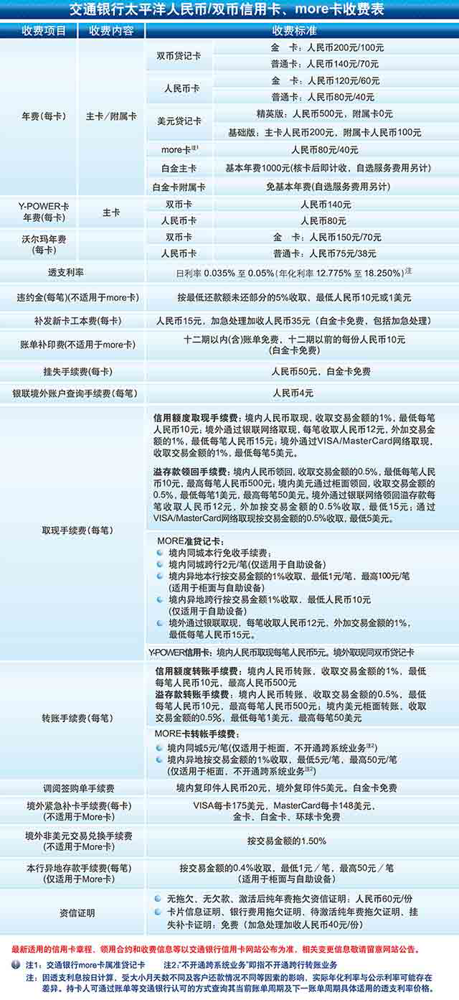

征信授权及条款
- 本人同意信用卡征信授权
- 本人已阅读并同意遵守信用卡重要提示 、客户申领声明 、《交通银行太平洋信用卡章程》、《交通银行太平洋个人信用卡领用合约》、《交通银行银联IC信用卡闪付业务条款》和收费表
- 本人已阅读并同意遵守《交通银行太平洋信用卡账单日自动购汇业务条款》（如开通）
- 本人已阅读并同意遵守《交通银行太平洋贷记卡自动转账还款业务条款》（如开通）
- 本人已阅读并同意遵守《交通银行太平洋信用卡电子账单服务协议》（如开通）
- 本人同意在指定银联商户刷卡消费时使用"密码+签名"方式确认交易，已阅读并同意相关业务说明
- 本人同意贵行同时为本人注册交通银行信用卡|买单吧会员账号，已阅读并同意遵守《交通银行信用卡|买单吧在线服务协议（交通银行信用卡官网,买单吧及积分乐园商城）网站会员会员权益说明》
- 本人同意贵行将此次本人作为被推荐人递交信用卡申请的完成情况和推荐完成进度以短信形式通知到我的推荐人（如是推荐办卡）。其中，本人信用卡申请的完成情况和推荐完成进度包括但不限于本人已申领卡片、已核卡、已激活及已消费的相关状态情况。
- 我授权交通银行将我预留在银行的手机号码提供给商户，用于在特定活动中获取短信兑换券码
- 本人同意，在因网络通讯故障、误操作或其他原因导致未成功提交本次申请时，接受贵行提供的预约办卡服务，并了解贵行将委派银行专员与本人联系信用卡申领相关事宜
信用卡征信授权
本人同意，为了审核领卡申请，自本人填写并提交本页所载的本人信息起的1个月内，本人不可撤销地授权交通银行太平洋信用卡中心随时向中国人民银行金融信用信息基础数据库和其他合法设立的征信机构查询本人在其中的全部信用信息及信用报告，亦可向有关部门、单位和个人了解本人的身份、财产和其他有关信息（包括但不限于学历、职业、缴纳社会保险和住房公积金，拥有机动车、房地产或金融资产等信息）；
信用卡重要提示
- 具有完全民事行为能力和合法还款保障的个人，可凭本人有效身份证件和交通银行要求的其他资料，通过银行营业网点、业务代表和官方网站等正规渠道申领信用卡（附属卡除外）。交通银行未授权任何非银行机构或个人代办信用卡；申领过程不收取任何费用。
- 应严格遵守交通银行不时发布的安全提示，妥善保管信用卡、身份证件、手机等物品，谨防可能被用于验证持卡人身份或交易的信用卡磁条、芯片或卡面信息、各类密码（含手机动态密码），以及持卡人签名和其他个人私密信息泄露。为加强用卡安全，推荐设定交易密码，并在适用的场合尽可能使用密码交易确认方式。用卡时不要让卡片脱离管控或在不明设备上使用，遗失信用卡后请立即挂失。
- 贷记卡内的资金不计存款利息；使用贷记卡预借现金或未在到期还款日前全额还款将不享受免息还款期待遇，全部透支交易额（含已还部分）自交易记账日起按规定利率全额计收利息并按月计收复利。
- 白金卡核发后，不论激活与否，即计收年费，但以下情况除外：1.新客户通过网络渠道首次申请交通银行白金信用卡的情况下（加办卡除外），该白金卡在首次激活后计收年费；2.瑞卡白金卡核发后，在首次激活后按年计收年费（包括新客户和加办客户，且不支持年费减免）。除白金卡外的其他信用卡首次激活后需按年支付年费（符合减免条件的除外）；使用信用卡预借现金和溢缴款领回需支付取现/转账手续费；贷记卡最低还款额未还部分需支付违约金。各收费项目、方式和标准详见收费表。
- 贷记卡账户未在到期还款日前还足最低还款额，或者信用卡账户因非法使用等原因而被采取冻结止付等管制措施，将影响持卡人的信用记录，情节严重的还可能涉嫌违法犯罪。请合法用卡、量力透支和按时还款。
- 交通银行为开展信用卡业务的目的，可能将持卡人的个人信息、信用卡账户和交易信息以及其他有关信息提供给直接或协助信用卡业务处理（包括但不限于制卡、对账单印制、通讯或邮寄、逾期欠款提醒、增值服务提供等）的服务机构，以及联名卡的联名合作方等机构。交通银行将要求并督促该等机构对上述持卡人信息严格保密。
- 申请的信用卡获批后，部分特选持卡人经交通银行综合审核，可自动获得好享贷额度。该好享贷额度为交通银行在持卡人个人综合授信内授予持卡人的除信用额度以外不可循环的临时性的消费信贷额度，须经持卡人另行阅读同意“好享贷”业务条款并开通“好享贷”业务后方可使用。开通“好享贷”业务后，符合“好享贷”业务条件的交易将记入好享贷额度并自动生成分期还款计划。
- 申请的信用卡获批后，部分申请“天使贷”的特选持卡人经交通银行综合审核，还可获批天使贷额度。该天使贷额度为交通银行在持卡人个人综合授信内授予持卡人的除信用额度以外不可循环的临时性的消费信贷额度。天使贷额度激活后，在指定使用有效期内符合条件的交易将记入天使贷额度并自动生成分期还款计划，按月计收分期本金和分期手续费。持卡人使用天使贷额度后，若经交通银行免费渠道多次提示还款后至本期账单日零时，仍未还清往期欠款（含息费）的，为减少持卡人账户逾期并进一步影响个人征信记录的风险，交通银行将于本期账单日次日起至下一个账单日零时前向持卡人提供短信、人工电话或专员上门提醒还款服务，并向持卡人收取资信管家服务费。在天使贷额度使用有效期内，若持卡人拨打交通银行客服热线，经IVR提示可选的免费自助服务渠道以及银行人工服务的收费标准后，持卡人确认选择通过客服人工热线办理 “天使贷”业务相关服务的，交通银行将向持卡人收取信息秘书服务费。本业务所涉及之分期手续费、资信管家服务费及信息秘书服务费的收取方式及费率以交通银行公告为准，本业务产生的费用和利息均记入持卡人信用卡的账户内。
- 交通银行贷记卡最长免息期为56天，具体最后还款日以账单上记载的日期为准。
- 信用记录提醒：请按账单及时还款，到期还款日前如未还清最低还款额将产生逾期，我行将会向人行金融信用信息基础数据库上报您的逾期记录，届时可能会影响您的个人征信。
手机渠道新办卡申领声明
申领声明：
本人充分了解并清楚知晓出租、出借、出售、购买账户的相关法律责任和惩戒措施，承诺依法依规开立和使用本人账户。
本人系通过交通银行网上申请方式向贵行提交申领指定种类的交通银行太平洋个人信用卡及消费信贷额度（如有）。本人确认，指定申请编号项下的所有资料，包括此表、通过网上申请输入的信息、本人以电话等方式要求补正的信息，以及以书面或影像等方式提供的证明文件等真实、准确、有效，共同构成本人向贵行提交的完整申请资料。本人在网上申请并勾选同意开通相关服务功能时，已充分了解并同意遵守相关业务规则（包括但不限于领用合约、章程、服务协议、业务条款细则、收费表等）。本人在网上点击确认提交，即表明本人同意提交申领指定信用卡及消费信贷额度（如有）的申请。
本人同意遵守《交通银行太平洋信用卡章程》、《交通银行太平洋个人信用卡领用合约》、《交通银行银联IC信用卡闪付业务条款》、收费表、重要提示和此表的其他各项内容（包括但不限于《交通银行太平洋信用卡好享贷业务条款细则》、《交通银行太平洋信用卡天使贷业务条款细则》等），交通银行已对上述内容（尤其是以加粗字体显示的条款）进行了说明。
仅对获批交通银行沃尔玛信用卡：本人同意为更好地接受联名方的优惠待遇和服务信息，授权交通银行在批准信用卡申请后，将本人的姓名、地址及电子邮箱地址（如有）披露给沃尔玛（中国）投资有限公司及其在中国境内经营管理的各公司和门店（下称“沃尔玛”）以及沃尔玛的授权外包商，并且同意届时接收与沃尔玛所经营的产品、服务、促销活动相关的邮政信件、专人快递、电子邮件和其它信息资料，但交通银行应要求沃尔玛及其授权外包商遵守相关保密责任并在合理的期限内销毁上述信息资料；如交通银行与沃尔玛之间关于信用卡的合作协议到期或解除时，且沃尔玛或其指定的其他发卡机构根据届时适用法律及合作协议的规定向交通银行购买有关信用卡的业务，在该等购买行为完成后，交通银行有权向沃尔玛或前述其他发卡机构提供（并且沃尔玛也有权向该等机构提供）有关本人的姓名、地址、电子邮箱地址、联系电话以及有关使用信用卡的全部信息，交通银行及沃尔玛无需就上述事项另行征求本人同意。
仅对获批交通银行锦江之星蓝鲸信用卡：本人已了解该卡具有的锦江之星蓝鲸会员功能，并同意授权交通银行根据锦江之星旅馆有限公司的要求从本次申请的主卡账号内自动支付首两年会员费（现行标准￥158/两年），前述支付不受账户可用额度不足或状态不正常的影响。
交通银行太平洋信用卡章程
第一章 总则
第一条 为向社会提供消费信用和支付结算服务，保护信用卡业务各方当事人的合法权益，根据适用的法律法规和监管政策（下称适用法律），制定本章程。
第二条 太平洋信用卡（下称信用卡）是交通银行股份有限公司及其分支机构（下称发卡机构）发行的，允许持卡人在核定的信用额度内透支使用，具有消费信贷、存取现金、转账结算等功能的金融支付工具。信用卡按是否提供免息还款期待遇分为贷记卡和准贷记卡；按发行对象分为个人卡和单位卡，其中个人卡分为主卡和附属卡；按账户币种分为单币种卡（含人民币卡和外币卡）和多币种卡。
第三条 发卡机构开展信用卡业务，以及申请人/持卡人申领和使用信用卡，应遵守本章程。
第二章 申领条件和手续
第四条 凡具有完全民事行为能力、有合法还款保障的个人，可凭本人有效身份证件及发卡机构要求的其他资料申领个人卡主卡；主卡持卡人可为其达到发卡机构规定年龄的子女，以及具有完全民事行为能力的配偶和其他直系亲属申领附属卡。
第五条 凡注册于中国境内的法人单位，可凭开户许可证、指定申领人的有效身份证件及发卡机构要求的其他资料申领单位卡。
第六条 个人或单位申领信用卡须遵守账户实名制规定，如实提供申请资料，并与发卡机构签订信用卡领用合约（下称《领用合约》）。发卡机构根据申请人的申请资料、资信状况和洗钱风险评级情况等信息有权决定是否核发信用卡，并核定卡片等级、信用额度和担保条件等。
第三章 信用卡使用和账户管理
第七条 信用卡归发卡机构所有，仅限持卡人本人使用，不得出租、转借或交由他人使用。信用卡仅限用于个人消费领域，不得用于生产经营、投资等非消费领域，但公务卡还可用于预算单位的差旅、办公采购等日常公务支出和财务报销。外币卡和多币种卡在境外仅限用于国家外汇管理局规定的经常项目下的消费支付，不得用于其他交易的支付。
第八条 持卡人可按发卡机构的规定，在其指定或银行卡组织联网的银行营业网点、机具设备和特约商户等使用信用卡消费、还款、预借现金（含现金提取、现金转账和现金充值，下同）和溢缴款领回。信用卡的具体交易确认方式和使用规则等以《领用合约》的约定为准。
第九条 发卡机构有权根据持卡人的资信状况、用卡情况和风险信息随时调整其信用额度。个人卡主卡及其附属卡、同一持卡人名下的多张个人卡主卡、同一申领单位的多张单位卡，以及多币种卡的各币种账户的信用额度均实行合并管理、额度共享。除发卡机构另有规定外，在分别受限于各卡（账户）信用额度的前提下，各卡（账户）实际使用的信用额度总和不得超过各卡（账户）中的最高信用额度。
第十条 持卡人使用个人卡主卡及其附属卡产生的各项收支款项和费用均记入主卡账户。主卡持卡人对主卡及其附属卡的所有应还款项负偿还责任；附属卡持卡人对本人附属卡的应还款项负连带偿还责任主卡持卡人对主卡及其附属卡的所有应还款项负偿还责任；附属卡持卡人对本人附属卡的应还款项负连带偿还责任。各指定申领人使用单位卡产生的各项收支款项和费用均记入单位卡账户。申领单位对单位卡的所有应还款项负偿还责任。
第十一条 持卡人使用信用卡产生的应还款项应以如下资金或方式偿还：
（一）个人卡人民币应还款项应以现金存入或以其工资、劳务报酬及投资回报等合法款项转账偿还；外币应还款项应以外币现钞存入、从其外汇（含外钞）账户转账，或以人民币购汇偿还。
（二）单位卡人民币应还款项应从其基本存款账户转账偿还，不得存入现金或销货收入；外币应还款项应从其按境内外汇账户管理规定开立的收支范围内具有相应支付内容的外汇账户转账偿还，不得存入外币现钞，偿还后单位卡内不得存有外汇资金。
第十二条 个人卡不得在境内透支提取外币现钞；单位卡不得在境内提取人民币或外币现钞。个人卡在自助机具或境外办理人民币或外币取现（含预借现金和溢缴款领回，下同）应遵守相关监管机构以及银行卡组织、收单机构和发卡机构的限额和规定。
第十三条 信用卡有效期届满后，发卡机构应为符合到期续卡条件的持卡人续发新卡，持卡人主动申请不续卡或在有效期内未激活信用卡的除外。已过期或注销的信用卡不能继续使用，但持卡人已发生的债权债务关系不受信用卡过期或注销的影响。信用卡注销时，发卡机构可要求持卡人交还信用卡；单位卡内如有剩余资金，应转入其基本存款账户，不得提取现金。
第四章 计息与收费
第十四条 发卡机构对贷记卡账户内的资金不计付存款利息；对准贷记卡账户内的资金按发卡机构公布的活期存款利率和计息办法计付存款利息；对IC信用卡电子现金账户内的资金不计付存款利息。
第十五条 发卡机构根据《领用合约》向贷记卡持卡人提供最低还款额待遇和非预借现金交易的免息还款期待遇。
第十六条 贷记卡持卡人未能按期全额还款或进行预借现金交易，不享受免息还款期待遇，应分别支付不符合免息条件的全部透支交易额（含已偿还部分）或者预借现金交易额自交易记账日至还款记账日的透支利息，并按月计收复利。
第十七条 准贷记卡透支不享受免息还款期和最低还款额待遇，应支付透支额自交易记账日至还款记账日的透支利息。
第十八条 发卡机构在适用法律许可的范围内，可根据《领用合约》对贷记卡持卡人未按时偿还最低还款额的行为收取违约金。
第十九条 信用卡透支利率，以及年费、违约金和其他费用（下称各项费用）的收费项目和收费标准，按收费表的规定执行。发卡机构在适用法律许可的范围内，可根据《领用合约》不时对收费表的内容进行调整。
第五章 当事人的主要权利和义务
第二十条 发卡机构享有如下主要权利：
（一）发卡机构有权索取申请人的个人信息和其他申请资料，向有关部门、单位和个人了解其身份、财产和其他有关信息，根据《领用合约》向合法设立的征信机构查询和报送其信用信息和其他有关信息。
（二）发卡机构有权决定是否向申请人核发、续发信用卡及具体发卡、续卡条件，并根据《领用合约》核定和调整持卡人的信用额度。
（三）持卡人未能按时偿还应还款项的，发卡机构有权根据《领用合约》采取必要的资产保全措施，督促持卡人还款，并追究其法律责任。
（四）发卡机构有权根据本章程和《领用合约》向持卡人收取信用卡透支利息和各项费用。
（五）适用法律规定及本章程和《领用合约》约定的发卡机构的其他权利。
第二十一条 发卡机构承担如下主要义务：
（一）发卡机构应以书面或通过官方网站等向申请人/持卡人披露信用卡申请条件、产品功能、收费表、信用卡使用说明、安全提示以及本章程、《领用合约》等内容。
（二）发卡机构应向持卡人核发符合安全管理要求的信用卡，并根据《领用合约》为持卡人提供信用卡使用服务。
（三）发卡机构应设立24小时客服热线和其他服务渠道，为申请人/持卡人提供信用卡申请处理进度和结果查询、信用卡激活、对账单和账务查询、挂失和密码重置、业务咨询和办理、投诉处理等服务。
（四）发卡机构对申请人/持卡人的个人信息负有保密义务, 但适用法律另有规定或《领用合约》另有约定的除外。
（五）适用法律规定及本章程和《领用合约》约定的发卡机构的其他义务。
第二十二条 申请人/持卡人享有如下主要权利：
（一）持卡人享有发卡机构提供的各项信用卡服务。
（二）申请人/持卡人有权知悉信用卡的功能、使用方法、各项费用的收费项目和标准、透支利率及有关的计算公式等信息。
（三）持卡人有权根据《领用合约》获取对账单，了解信用卡的账务情况，并对有疑问的交易提出异议。
（四）申请人/持卡人有权对发卡机构的服务质量进行监督，并对不合格服务进行投诉。
（五）适用法律规定及本章程和《领用合约》约定的持卡人的其他权利。
第二十三条 申请人/持卡人承担如下主要义务：
（一）申请人/持卡人应按发卡机构的要求如实提供申请资料，并在预留的个人信息发生变更时及时通知发卡机构。
（二）持卡人使用信用卡，应遵守本章程、《领用合约》、收费表和发卡机构不时发布的各项规则（含上述文件的任何修改），还应遵照适用法律和银行卡组织、收单机构的有关规定办理业务。
（三）持卡人应遵守发卡机构关于安全用卡的各项规定，根据《领用合约》采取所有合理谨慎措施妥善保管和使用信用卡。
（四）持卡人应根据《领用合约》按时偿还使用信用卡而发生的所有应还款项，不得以和特约商户、办理取现业务的机构、联名合作方或其他任何第三方之间发生纠纷为由拒绝偿还任何应还款项。
（五）适用法律规定及本章程和《领用合约》约定的持卡人的其他义务。
第六章 附则
第二十四条 发卡机构与持卡人的具体权利义务由双方签订的《领用合约》约定；如《领用合约》及其附件与本章程有任何冲突的，以《领用合约》及其附件为准。本章程未尽事宜，按照适用法律、银行卡组织和发卡机构的业务规则，以及金融惯例办理。
第二十五条 本章程由发卡机构制定和公布，是发卡机构与持卡人之间合同的重要组成部分。除适用法律另有规定外，发卡机构修改本章程，经在营业网点或官方网站提前至少45个自然日公告后生效；持卡人可在公告期内自行选择是否继续使用信用卡，如持卡人未在公告期内办理销户，即视为其同意接受并遵守修改后的本章程。
交通银行太平洋个人信用卡领用合约
重要提示：请您认真阅读本合约全文，尤其是以加粗字体显示的条款，确保充分知悉和理解本合约的所有内容。如有疑义，请及时提请我行予以说明。
交通银行股份有限公司___________(下称甲方）与申领人（下称乙方，包括主卡及其附属卡申领人）在同意共同遵守适用的法律法规和监管政策（下称适用法律），以及《交通银行太平洋信用卡章程》（下称《章程》）的前提下，就申领和使用太平洋个人贷记卡或准贷记卡（下称信用卡）事宜达成本合约。
信用卡申领和信用额度管理
（一）乙方应按甲方规定的内容和方式，准确、完整、真实地提交信用卡申请信息和证明资料（下称申请资料）。甲方有权根据乙方的申请资料、资信状况和洗钱风险评级情况等信息决定是否核发信用卡，并核定卡片等级、信用额度和担保条件等。
（二）乙方不可撤销地授权甲方在信用卡申领关系建立和存续期间，随时向中国人民银行金融信用信息基础数据库和其他合法设立的征信机构查询乙方在其中的全部信用信息及信用报告，向有关部门、单位和个人了解乙方的身份、财产和其他有关信息（包括但不限于学历、职业、缴纳社会保险和住房公积金，拥有机动车、房地产或金融资产、乙方联系方式等信息）；甲方有权为审核领卡申请、核定或调整信用额度、开展贷后管理、进行异议处理和清收应还款项等目的，查询、了解、保留、使用和提供上述信息。
（三）除甲方另有规定外，乙方主卡持卡人可为符合条件的其他自然人申领最多三张附属卡。主卡持卡人应保证附属卡的申领得到附属卡持卡人的授权，并督促附属卡持卡人遵守《章程》、本合约及甲方的各项规定。主卡及其所有附属卡的信用额度共享。甲方有权自行或依主卡持卡人申请对附属卡的使用设定限制。
（四）多币种信用卡的信用额度在其各币种账户间共享。
（五）信用卡核发后，甲方将至少每年一次对乙方的信用额度进行评估，并有权随时根据乙方资信状况、用卡情况和风险信息对信用额度进行调整。乙方亦可申请调整信用额度，调整与否及幅度由甲方决定。信用额度调整一经甲方作出即生效，甲方将通过对账单、手机信息或其他方式及时通知乙方。乙方如不接受信用额度调升，可要求甲方恢复。除甲方有适用法律认定的过错外，乙方不得以未经同意或未收到通知为由，要求甲方就信用额度调整承担责任。
（六）甲方可在适用法律许可的范围内向乙方另行授予或在信用额度内划定专门用于分期付款、预借现金（含现金提取、现金转账和现金充值，下同）等用途的授信额度。该等授信额度适用本合约项下关于信用额度的任何约定和甲方另行发布的各项规则。
信用卡的使用
（一）信用卡的所有权归甲方，仅限乙方本人使用。
（二）乙方收到卡函后，应及时了解甲方核定的信用额度和指定的账单日，认真阅读有关信用卡使用的说明资料，按甲方规定的方式激活信用卡，并立即在卡片背面的签名栏内签上与申请资料相同的姓名；乙方在用卡时如需签名确认，应使用此签名。
（三）乙方可在甲方认可的银行营业网点、机具设备和特约商户等使用信用卡。乙方使用信用卡消费、还款、预借现金和溢缴款领回时，应遵守适用法律，以及甲方、收单机构和银行卡组织的相关规定。乙方同意，甲方可按适用法律或风险管理需要，对乙方在特定机具设备、特约商户或柜面等渠道的信用卡消费、预借现金和溢缴款领回等交易设定限制或限额；并可适时对该限制或限额进行调整。乙方有权在甲方对各渠道办理预借现金业务所设定的每卡每日限额内，通过甲方认可的方式自行调整该限额。甲方有权调整各渠道办理预借现金业务的每卡每日限额，在不违反适用法律强制性规范的前提下，应提前在营业网点或官方网站进行公告；公告期内，乙方有权选择是否继续使用本业务；若公告期满后乙方仍选择使用本业务的，则视为其同意接受并遵守调整后的限额规定。乙方办理人民币或外币取现（含预借现金及溢缴款领回，下同），除受限于甲方核定的用于预借现金的授信额度、每卡每日限额和其他相关规定外，还应遵守适用法律和银行卡组织的限额和规定。
（四）乙方应使用相应的密码或验证要素确认交易。
1．凡按甲方规定及依乙方选择需使用密码（含手机动态密码）的交易，包括但不限于取现、在特定范围内的刷卡消费等，以密码进行交易确认。
2．凡因交易性质或习惯，并按甲方规定或依乙方选择不使用密码的交易，包括但不限于不校验密码的刷卡消费，邮购、商旅和其他电话、传真或网络等非面对面交易，以及IC信用卡电子现金（下称电子现金）脱机消费、根据银行卡组织规则无需验证密码的交易等，按甲方规定分别以磁条或芯片信息，乙方签名，卡号、有效期、校验码等卡面信息，乙方身份证件号码、电话号码等个人信息以及指纹等个人生物特征信息等要素（无论完整或片段）中的一项或多项（下称验证要素）进行交易确认。
经密码或验证要素校验通过，交易即视为乙方本人所为并由乙方承担交易款项。特约商户、收单机构核验乙方签名，按行业通行的一般识别标准执行。
尽管有上述约定，若乙方未以上述方式确认交易（包括但不限于由特约商户主动发起的在银行卡组织规定范围内超出预授权金额的交易，以及按交易地法律和惯例产生的税金、小费和货币汇兑费用等），或交易确认有瑕疵，经甲方查证有相关书面资料、电话录音、电子数据等证明交易真实存在且经乙方明示或默示认可，或者乙方虽不认可但对交易发生有过错的，乙方不得以未按约定确认交易、交易确认有瑕疵等为由拒绝承担交易款项。
（五）乙方同意，在其使用信用卡消费（预借现金和溢缴款领回除外）发生可用信用额度不足时，甲方可根据乙方的资信状况及用卡情况，为乙方自动免费开通一定额度内的超授信额度用卡服务，但乙方有权取消本服务。
（六）乙方与特约商户、办理取现业务的机构、联名信用卡（含与第三方合作的认同卡、主题卡等，下同）的合作方（下称联名合作方）或其他相关方之间发生的交易纠纷应由纠纷各方自行解决，甲方不承担任何责任，乙方不得以纠纷为由拒绝偿还因信用卡交易而产生的应还款项。
（七）乙方经甲方许可办理信用卡分期付款、积分交易和兑换、刷卡金、电子现金、网络支付业务或其他特殊业务，应遵守甲方另行发布的各项规则。
（八）乙方知悉，信用卡可在甲方渠道开通网络支付功能，以及经乙方授权后通过非金融机构支付平台开通网络支付功能。各网络支付功能的持卡人身份认证方式、相关交易规则、法律风险、风险防范措施以相关业务规则的具体规定内容为准。
对账与还款
（一）应还款项为乙方在甲方核定的信用额度内及超信用额度使用信用卡的本金、透支利息、违约金和费用等。乙方主卡持卡人应对主卡及其所有附属卡产生的全部应还款项承担偿还责任；乙方附属卡持卡人仅对本人附属卡产生的应还款项承担连带偿还责任；主卡或附属卡持卡人在本合约项下的还款义务不受乙方内部约定或纠纷的影响。
（二）甲方将按与乙方约定的方式，通过电子邮件、手机信息或官方微信等电子渠道按月向乙方提供对账单，但当期无新增交易或账户无变动的情形除外。乙方如在账单日后的合理时间内未收到对账单，可通过客服热线、电子银行或甲方认可的其他方式及时查询账务情况。乙方不得以未收到或延迟收到对账单为由拒绝偿还应还款项。
（三）如乙方对交易有疑问，应及时向甲方提出异议；乙方提出异议后，应按甲方要求提交相关书面材料，并配合甲方进行调查；在调查期间，除甲方另行同意外，乙方仍应按时向甲方偿还因异议交易而产生的应还款项。
（四）如乙方的应还款项在任何时候累计超过甲方核定的信用额度，甲方有权要求乙方立即偿还上述超出信用额度部分的款项
（五）乙方应及时通过甲方许可的渠道，以现金存入或合法款项转账等方式向甲方偿还全部应还款项或最低还款额，并确保还款在到期还款日或最后还款日前到账，否则即构成逾期还款，乙方应承担由此产生的透支利息、违约金和其他法律责任，其信用记录亦将受影响。
（六）使用信用卡产生的外币透支，乙方可用自有外汇资金偿还，亦可向甲方申请以人民币购汇直接偿还（适用法律禁止的交易除外），但购汇金额不得超过届时尚未清偿的外币透支额。
（七）乙方的还款将按如下顺序冲还应还款项：
1．正常或90天（含）内的逾期账户：贷记卡按透支利息、费用、预借现金本金、分期付款本金、消费本金的款项顺序冲还，其中每一类款项分别按先往期、后当期的对账单顺序冲还，往期和当期的各类款项均冲还完毕后，再按上述款项顺序冲还未出对账单的应还款项；准贷记卡按透支利息、预借现金本金、消费（含费用）本金的款项顺序冲还，其中每一类款项分别按先往期、再当期、最后未出的对账单顺序冲还。
2．90天以上的逾期账户：贷记卡按预借现金本金、分期付款本金、消费本金、费用、透支利息的款项顺序冲还，其中每一类款项分别按先往期、再当期、最后未出的对账单顺序冲还；准贷记卡先按预借现金本金、消费（含费用）本金的款项顺序冲还，其中每一类款项分别按先往期、再当期、最后未出的对账单顺序冲还，各期的预借现金本金和消费（含费用）本金均冲还完毕后，再按上述对账单顺序冲还透支利息。
（八）甲方有权自行或委托第三方专业机构、律师通过电话、信函、手机信息、电子邮件、上门面访、公告或司法途径，向乙方催缴应还款项。
（九）如乙方未按时偿还任何到期应还款项，乙方授权甲方随时扣划乙方在交通银行股份有限公司（下称交通银行）及其分支机构开立的任何账户中的资金用于清偿（包括在乙方的多张主卡间或多币种卡的各币种账户间进行资金抵销）。扣划后，甲方应将相关扣划结果以手机信息或信函等方式通知乙方。如扣划所得资金与需偿还的应还款项币种不一致，甲方有权按扣划时甲方公布的汇率结售汇后折抵清偿。
利息和费用
（一）贷记卡的利息和费用
1．甲方不对乙方贷记卡内的资金（含电子现金）计付存款利息。
2．除甲方另有规定外，乙方除预借现金外的交易自交易记账日至到期还款日的期间为免息还款期，乙方在免息还款期内全额偿还对账单记载的应还款项的，无需支付除预借现金外交易的透支利息（下称免息还款期待遇）。乙方贷记卡具体到期还款日以对账单记载的日期为准。
3．除甲方另有规定外，乙方如在到期还款日前不能全额偿还应还款项，可以选择按对账单记载的最低还款额还款（下称最低还款额待遇）。但若乙方未能在当期账单周期记载的到期还款日前偿还最低还款额的，则视为乙方违约，甲方有权根据下列标准按账单周期向乙方收取当期违约金：
（1）乙方最低还款额未偿还部分不超过200元（含）人民币或20（含）美元，则甲方有权按照10元人民币或1美元的标准向乙方收取违约金；
（2）乙方最低还款额未偿还部分超过200元（不含）人民币或20（不含）美元，则甲方有权按照最低还款额未还部分金额的5%向乙方收取违约金。
若乙方未按本合约约定按期向甲方支付违约金，则甲方有权将该笔违约金持续计入乙方后续生成的对账单中直至乙方全额支付完毕。最低还款额由10%一般消费余额、10%预借现金余额、利息余额、分期余额、其他应付费用余额、上期最低还款额未还部分及超出临时调整前信用额度部分的余额组成。
4．如有下列情形之一的，乙方不享受免息还款期待遇，甲方将按规定利率计收从交易记账日至还款记账日的透支利息，并按月计收复利：
（1）乙方未能在到期还款日前全额偿还应还款项（包括但不限于选择享受最低还款额待遇），甲方将对除预借现金外的全部透支交易额（包括已偿还部分）计收透支利息；
（2）乙方预借现金的，甲方将对全部预借现金交易额计收透支利息。
（二）准贷记卡的利息和费用
1．甲方对乙方准贷记卡内的资金（电子现金除外）按交通银行公布的活期存款利率和计息办法计付存款利息。
2．乙方准贷记卡的透支期限自交易记账日起最长不超过60天（含）。乙方应在按此计算的最后还款日前全额偿还应还款项。
3．乙方使用准贷记卡透支不享受免息还款期待遇和最低还款额待遇。甲方将对全部透支额按规定利率计收自交易记账日至还款记账日的透支利息。
（三）甲方在本合约项下向乙方收取透支利息的利率，收取年费和违约金，以及其他费用的收费项目和标准，按收费表的规定执行。
信用卡安全管理
（一）乙方应遵守甲方关于安全用卡的各项规定，采取所有合理谨慎措施，妥善保管信用卡，以及身份证件、交易凭证和甲方不时向乙方发送的卡函、对账单等文件（下称重要文件），防止可能被用作验证乙方身份或确认交易的各项信息（下称敏感信息，包括但不限于验证要素和各种密码、个人私密信息、信用卡交易信息以及指纹等个人生物特征信息等）丢失或泄露。
（二）乙方发生信用卡遗失、被盗或被他人占有，或密码遗忘、泄露等情形的，应立即通过客服热线、电子银行或甲方认可的其他方式办理挂失或密码重置手续。挂失和密码重置自甲方办理完毕时生效；但乙方仍应对挂失生效前已发生的或密码重置生效前凭原密码已进行的所有交易（包括尚未入账的交易），以及挂失生效后发生的电子现金脱机消费承担全部责任。
（三）无论本合约是否有其他约定，乙方有下列情形之一的，因此产生的所有交易和损失由乙方自行承担，甲方不承担责任，前述约定不免除因甲方过错依法应由甲方承担的责任：
1．乙方未在信用卡背面签名的；
2．乙方将信用卡出租、转借或交由他人使用的，或在用卡时放任信用卡脱离视线和管控的；
3．乙方未妥善保管信用卡和重要文件，或丢失、泄露敏感信息的；
4．乙方在未受安全保护的机具设备、特约商户、电脑终端、互联网或通讯线路上使用信用卡的，包括但不限于在受到病毒侵害的电脑或手机终端上、在钓鱼网站上、在不安全的WiFi环境里使用信用卡等情形；
5．乙方有违反适用法律或本合约及章程规定的安全用卡要求的。
信用卡服务与通知
（一）甲方可对向乙方提供服务的过程（包括但不限于电话、面谈、信函、传真、电子邮件、手机信息或网络交流等）通过录音、书面、电子数据等方式进行记录和保存，并作为甲方相关业务处理的依据。
（二）甲方在向乙方提供服务时，将按业务种类和风险程度分别使用本合约第五条第一项规定的敏感信息中的一项或多项来验证乙方身份；经敏感信息验证通过的业务处理指示，或由乙方预留的电话号码或电子邮箱发出的电话、手机信息或电子邮件指示，均视为乙方本人所为并由乙方承担责任。
（三）为系统升级、检修等目的，经事先公告后，甲方可在公告记载的时间和范围内暂停向乙方提供信用卡使用或其他服务；如遇电力、通讯、系统故障等紧急原因使甲方在未经事先公告的情况下无法正常提供服务的，甲方将尽最大努力及时恢复服务提供并向乙方提供必要的帮助，但不承担由此给乙方造成的损失，前述约定不免除因甲方过错依法应由甲方承担的责任。
（四）如任何非乙方应得款项错误存入乙方信用卡，经甲方查实确认的，乙方授权甲方从其信用卡扣转该笔错存款项并恢复原状而无须征得乙方同意。
（五）乙方参加甲方主办的积分计划、增值服务项目和其他营销活动，应遵守甲方另行发布的各项规则，并不得以虚假交易、欺诈或其他不诚信手段套取积分、奖赠品、服务权益或其他经济利益。如乙方自动或申请参加任何涉及保险的增值服务项目或营销活动，即视为乙方同意甲方为其投保相关人身或财产保险，但甲方仅承担投保义务，核保、理赔和保险责任均由保险公司承担。
（六）甲方为履行本合约目的，可选用有资质的第三方服务商直接或协助为乙方提供服务或进行业务处理。因第三方服务商的过错造成乙方损失的，甲方将为乙方向该等第三方服务商追索提供必要的协助。
（七）乙方应确保向甲方预留的联系方式（包括地址、联系电话、传真号码、电子邮件等）均真实有效。任一联系方式发生变更，乙方应立即通知甲方。该等信息变更在甲方收到更改通知并更改完毕时生效，其中更改完毕时间以乙方办理信息变更时甲方告知乙方的更改完成时间为准。变更生效前，甲方继续按原信息完成业务处理应视为适当履约，或甲方在自行获悉原信息错误的情况下可暂停相关业务处理并无需就此向乙方承担任何责任。
除本合约另有明确约定外，甲方对乙方的任何通知，甲方有权通过以下任一方式进行。甲方有权选择其认为合适的通知方式，且无需对邮递、传真、电话、电传或任何其他通讯系统所出现的传送失误、缺漏或延迟承担责任。甲方同时选择多种通知方式的，以其中较快到达乙方者为准。就同一事项，甲方对乙方发出一份以上通知且通知内容不同的，除非在通知中另有明确说明，以通知发出时间在后的为准。
1.公告，以甲方在其网站、网上银行、电话银行、手机软件终端或营业网点发布公告之日视为送达日。
2.专人送达，以乙方签收之日视为送达日；
3.邮递（包括特快专递、平信邮寄、挂号邮寄）送达于甲方最近所知的乙方通讯地址，以邮寄之日后的第3日（同城）/第5日（异地）视为送达日；
4.传真、移动电话短信或其他电子通讯方式送达于甲方最近所知的乙方传真号码、乙方指定的移动电话号码或电子邮件地址、微信号，以发送之日视为送达日。前述送达指相关信息进入服务商的服务器终端而不以相关信息实际在客户终端显示为标准。
公告主要针对不特定客户的公众性通知（包括但不限于调整产品和服务功能，暂停服务，修改《章程》、本合约和收费表等），经公告后不再个别通知乙方。
（八）乙方同意通过乙方向甲方预留的电话、信函、电子邮件、手机信息等渠道接收甲方发送的营销类信息。乙方如不同意接收甲方发送的营销类信息，可要求甲方停止发送。
（九）除甲方另有规定外，乙方在本合约项下的所有卡函、对账单和通知均发送给主卡持卡人；附属卡持卡人授权主卡持卡人代表其接收甲方通知或向甲方作出指示，并同意就该等通知或指示承担责任。
（十）乙方预留的联系人接受乙方委托，承担协助甲方联络乙方并传达信息（包括必要催缴信息）的义务。乙方应确保其已向联系人告知上述事项并已获得联系人同意，该联系人完全知晓其对乙方的联络和传达义务，否则造成的法律后果由乙方承担。
（十一）在适用法律许可的范围内，乙方应承担甲方因行使本合约项下的权利或要求乙方履行本合约项下的义务而发生的合理花费，包括但不限于诉讼费、律师费、公证费等。
信息保密和披露
（一）除适用法律、上市规则规定或国家有权机关要求外，甲方应对因履行本合约而获悉的乙方信息严格保密；未经乙方在本合约中或以其他方式同意，不得向任何第三方披露或用于与本合约无关的其他商业目的。如甲方超出本合约约定范围违法查询、使用和披露乙方信息，甲方应承担相应的法律责任。
（二）乙方同意甲方根据适用法律，将在信用卡申领关系建立和存续期间获得的乙方的个人基本信息、信贷信息、信用信息、不良信息（即适用法律规定的对乙方信用状况构成负面影响的信息）和其他有关信息提供给中国人民银行金融信用信息基础数据库和其他合法设立的征信机构。
（三）乙方同意甲方出于如下目的使用和披露乙方的个人信息、信用卡账户和交易信息，以及其他有关信息，甲方应要求受披露方遵守保密义务：
1．为开展信用卡业务或履行本合约目的，自行使用或披露给直接或协助进行服务提供或业务处理的第三方服务商；
2．为维护和提升客户关系，向乙方推荐或营销信用卡相关产品和服务，以及甲方开展的其他业务（包括但不限于代理销售的保险业务），自行使用或披露给交通银行及其分支机构或关联公司；
3．为风险分析和贷后管理的目的，自行使用或披露给交通银行及其分支机构或关联公司、与甲方签订保密协议的合法服务机构以及金融监管机构、银行卡组织、金融同业公会和其他金融机构；
4．为使乙方获取联名信用卡附带的联名合作方会员资格或优惠权益，披露给联名合作方或其指定的第三方服务商。
合约的生效、中止和终止
（一）本合约自甲方确认收到乙方提交的申请资料之日起生效，至甲方决定不向乙方核发信用卡之日，或甲方为乙方信用卡完成销户之日终止。
（二）乙方信用卡有效期（下称有效期）以卡面记载的到期年月为准，过期即失效；如乙方未在有效期届满前57天（含）或甲方不时规定的其他期限前，通过客服热线或甲方认可的其他方式通知甲方到期不续约的，甲方将视为乙方愿意续领新卡，并根据其资信状况、用卡情况和风险信息决定是否为乙方续发新卡。续卡后，双方在新卡项下的权利义务将继续适用本合约，原卡项下的债权债务（电子现金账户除外）亦将自动转移至新卡。
（三）乙方同意，如乙方持有的信用卡产品因适用法律规定，或甲方与银行卡组织、联名合作方等的合作变动或其他任何原因而停止发行，甲方将视情况决定终止本合约或在本合约项下为乙方换发其他种类信用卡。如甲方允许乙方信用卡在有效期届满前继续使用，用卡范围和功能将可能受影响，包括但不限于无法享受由银行卡组织、联名合作方提供的会员资格和优惠权益，甲方对此不承担责任。此外，如发生甲方与第三方的品牌许可合作终止的情形，甲方有权向乙方召回或取消信用卡并为乙方换发信用卡。
（四）乙方可在有效期内通过客服热线或甲方认可的其他方式申请销卡。主卡持卡人可为主卡或其附属卡销卡；主卡销卡的，所有附属卡须同时销卡；附属卡持卡人可为本人的附属卡销卡。销卡后，乙方将不得继续使用信用卡和享受持卡人权益（电子现金账户除外）。
（五）甲方如从国家有权机关、银行卡组织、收单机构，乙方本人或亲友、工作单位、联系人，自行调查、交易监测或其他任何渠道获悉乙方有下列情形之一的，甲方有权立即采取取消乙方参加积分计划和其他营销活动资格、强制更换卡片或重置密码、降低或取消信用额度、限制或停止用卡、要求提前偿还全部应还款项、收回信用卡等措施，乙方应承担由此产生的全部责任和损失；情节严重的，甲方还有权取消乙方的用卡资格并终止本合约：
1．乙方向甲方提供虚假申请资料的；
2．乙方财务或资信状况恶化、还款能力下降，包括但不限于名下的信用卡逾期还款的；
3．乙方信用卡被盗用或冒用，身份证件被盗用，敏感信息丢失、泄露，将信用卡出租、转借或交由他人使用，或有其他违反安全用卡规定的行为的；
4．乙方违反《章程》规定将信用卡用于生产经营、投资等非个人消费领域，或利用信用卡从事套现和其他非法活动的，或有洗钱嫌疑的，或涉及制裁名单的；
5. 乙方未按甲方规定及时完善客户基本身份信息或更新证件有效期的；
6．乙方拒不配合甲方就相关信用卡交易、案件或争议进行调查的；
7．乙方有欺诈、串通欺诈、违反诚信原则的行为的；
8. 乙方在积分累积或兑换中存在任何虚假交易、舞弊、欺诈或其他不诚信行为的；
9．乙方有其他违反适用法律规定或严重违反本合约约定或用卡风险可能增加的情形。
（六）乙方信用卡因产品停止发行、有效期届满不续卡、申请销卡、被取消用卡资格或其他任何原因而被注销的，乙方在本合约项下已产生或在销户前新产生的所有债务仍存续并全部到期，乙方应立即向甲方完全清偿。乙方在清偿信用卡项下全部应还款项和领回所有资金（包括电子现金账户内的资金），双方权利义务完全履行完毕后，甲方为乙方办理信用卡销户。
其他
（一）乙方同意，甲方可在适用法律许可的范围内，经公告后将其在本合约项下的任何权利或义务转让给任何第三方，无需事先征得乙方同意。
（二）除不可抗力外，任何一方如违反本合约的任何约定，应按照适用法律和本合约承担违约责任；除适用法律另有规定外，甲方无需对乙方的任何间接、附带的损失承担责任。
（三）信用卡申请表和申请资料、收费表均是本合约的附件和重要组成部分。
（四）乙方同意，甲方可在适用法律许可的范围内不时对本合约及其附件进行修改，经甲方营业网点或官方网站提前至少45个自然日公告后生效（但适用法律另有规定的，遵照该适用法律执行）；乙方可在公告期内自行选择是否继续使用信用卡，如乙方未在公告期内办理销户，即视为其同意接受并遵守修改后的本合约及其附件。
（五）本合约项下乙方申领和使用太平洋个人信用卡不受交通银行存款保险机制或其他保障机制保障。
（六）乙方如对本合约条款有任何疑义，或需进行业务咨询和投诉，乙方可通过至银行营业网点或拨打卡片背面信用卡客户服务热线等方式反馈，由双方协商共同解决。
（七）本合约适用中华人民共和国法律（为本合约目的不包括香港、澳门和台湾地区的法律）。若因适用法律颁布、修订导致与本合约约定内容不一致的，以适用法律规定内容为准。因履行本合约而发生的任何纠纷经协商不成的，由中华人民共和国有管辖权的人民法院诉讼管辖。
（八）乙方同意，除非甲方收到乙方关于变更通讯地址的书面通知，乙方向甲方预留的通讯地址是法院向乙方送达司法文书及其他书面文件的地址。上述送达地址适用的范围包括但不限于民事诉讼一审、二审、再审和执行程序等。如乙方应诉并直接向法院提交送达地址确认书，该确认地址与甲方最近所知的通讯地址不一致的，法院有权以送达地址确认书上的地址为准进行送达。
本合约争议解决过程中，法院可通过以下任一方式将判决书、裁定书、调解书送达于乙方：
1.邮递送达（包括特快专递、平信邮寄、挂号邮寄），以乙方在送达回证上的签收日为送达之日；
2.专人送达，以乙方在送达回证上签收之日视为送达之日。
法院采用邮递送达（包括特快专递、平信邮寄、挂号邮寄）方式的，如乙方未在送达回证上签收或乙方所预留的通讯地址不准确或通讯地址实际发生变更但甲方未收到乙方关于变更通讯地址的书面通知导致判决书、裁定书、调解书被退回的，以文书被退回之日视为送达之日。
法院采用专人送达方式的，如乙方未在送达回证上签收，以送达人当场在送达回证上记明情况之日为送达之日。
除判决书、裁定书、调解书外，法院对乙方的任何通知，法院有权通过第六条（七）款约定的任一通讯方式进行。法院有权选择其认为合适的通讯方式，且无需对邮递、传真、电话、电传或任何其他通讯系统所出现的传送失误、缺漏或延迟承担责任。法院同时选择多种通讯方式的，以其中较快到达乙方者为准。
（九）乙方通过信用卡申请表签名或电子渠道验证等方式确认并向甲方提交申领信用卡的申请，即视为乙方已通读并理解本合约及其附件的全部内容，并同意接受其约束。
交通银行银联IC信用卡闪付业务条款
一、银联IC信用卡闪付业务（下称“闪付业务”）是交通银行向银联IC信用卡持卡人（下称“持卡人”）提供的一种以接触或非接触方式进行快速、小额消费的支付业务。持卡人办理闪付业务，须遵守本业务条款。
二、本闪付业务仅适用于交通银行银联IC信用卡（下称“IC卡”），IC卡项下同时开立电子现金账户和主账户，具体包括：
（一）闪付免密免签业务。该业务为IC卡项下信用卡主账户（下称“主账户”）所具备的功能。
（二）闪付电子现金业务。该业务为IC卡项下电子现金账户所具备的功能，电子现金账户与主账户（仅限人民币账户）之间自动建立关联关系。
三、闪付免密免签业务
（一）闪付免密免签业务（下称“免密免签业务”）是指在部分指定行业和特约商户内，针对持卡人使用IC卡或承载IC卡信息的移动设备卡以闪付方式发起的、一定单笔交易限额以下的联机交易。 免密免签业务的单笔交易限额及累计交易限额以中国银联对外公布的限额为准，交通银行如根据自身风险政策要求调整单笔交易限额及累计交易限额，将通过信用卡网站或其他相关渠道公布。
移动设备卡是指加载于具备NFC近场通讯功能的移动设备内，借助移动设备相关功能完成资金支付功能的金融应用。移动设备卡属于异形IC卡。
（二）持卡人可通过客户服务热线或交通银行公布的其他渠道取消免密免签业务。
（三）免密免签业务无需进行密码验证和签名确认。持卡人可使用主账户的免密免签业务功能在支持中国银联IC卡受理的特约商户以IC卡非接触方式进行联机消费，通过上述联机消费方式发生的交易均视作持卡人本人所为。
（四）免密免签业务功能仅可在主账户卡卡面载明的有效期内进行。
（五）当主账户被挂失、冻结、注销或者发生其他不正常状态时，免密免签业务功能也随之止付。持卡人在有效期内须妥善保管IC卡。若持卡人否认在IC卡正式挂失前发生的免密免签交易，可致电交通银行信用卡中心提起申诉赔付，交通银行信用卡中心将根据中国银联相关规定对符合赔付规定的免密免签交易进行赔付；除此种情况以外，因IC卡遗失、被盗、出借、被第三方滥用等造成主账户内资金损失的，或申请赔付的免密免签交易不符合中国银联相关赔付规定的，或持卡人无法按照中国银联规定提供相关材料的，以及对于超过中国银联赔付规定金额等情形的，由持卡人自行承担相应损失。
（六）免密免签业务的交易提供对账服务，持卡人可通过现有的各账单服务查询主账户账务变动情况、额度信息和交易明细。
（七）持卡人使用免密免签业务进行的交易将作为消费类交易记入主账户，并可享受免息还款期待遇；如未按时偿还主账户透支欠款的，持卡人应按照适用的交通银行信用卡章程和领用合约承担透支利息和手续费。
四、闪付电子现金业务
（一）持卡人不得取消IC卡的电子现金账户，或者取消、变更电子现金账户与主账户之间的关联关系（纯功能卡销卡的情形除外）。同一主账户所关联的多个电子现金账户或者主卡及其附属卡分别关联的电子现金账户（如有）各自独立，互无关联。
（二）持卡人办理本业务条款规定的圈存、脱机消费、圈提等电子现金业务，将记入其IC卡的电子现金账户，且以人民币记账。如实际交易币种为外币，货币转换由中国银联按照其相关规定执行。
（三）电子现金账户初始余额为零，不可透支，持卡人须在其中存入足够资金（下称“圈存”）后方可使用。电子现金账户内的资金不计付存款利息，且资金余额在任何时候不得超过监管限额（现为人民币1000元）；交通银行有权根据监管规定不时调整该限额，亦有权在监管限额之下对特定IC卡或持卡人的电子现金账户另行设定资金限额。
（四）持卡人办理圈存，应通过交通银行境内营业网点、自助机具或者其他受认可渠道，从主账户向电子现金账户转账存入资金（下称“指定账户圈存”）或者直接向电子现金账户进行现金充值，并承担相关手续费（如有）。 指定账户圈存须校验主账户的交易密码，并作为消费类交易记入主账户；持卡人使用主账户透支进行的指定账户圈存交易可享受免息还款期待遇；如未按时偿还主账户透支欠款的，持卡人应按照适用的交通银行信用卡章程和领用合约承担透支利息和手续费。
（五）持卡人仅可使用电子现金账户在支持中国银联IC卡受理的特约商户以芯片接触或非接触方式进行脱机消费（下称“脱机消费”）；除另有规定外，电子现金账户不得进行包括取现或转账在内的其他支付结算交易（包括但不限于不得将已圈存到电子现金账户的资金转回主账户）。 脱机消费无需进行密码验证、身份验证和签名确认，均视作持卡人本人所为。
（六）持卡人在脱机消费时如遇电子现金账户余额不足的，对于IC卡且受理机具支持实时转接主账户联机交易的，该交易将直接全额改用主账户联机进行交易并适用主账户的联机交易规则；对于受理机具不支持实时转接主账户联机交易的，该交易失败。
（七）脱机消费仅可在电子现金账户的有效期内进行。电子现金账户的有效期以IC卡卡面或者其所关联的主账户卡卡面载明的有效期为准。但是，如纯功能卡所关联的主账户卡发生挂失补卡、卡片重置等情形的，除非纯功能卡亦换发新卡，否则电子现金账户的有效期仍以原主账户卡的有效期为准。
（八）电子现金账户不得挂失止付，其所关联的主账户挂失亦不对电子现金账户生效。持卡人在有效期内须妥善保管IC卡。除非向交通银行交还IC卡，主账户被挂失、冻结、注销或者发生其他不正常状态时，电子现金账户仍可在有效期内脱机消费。因IC卡遗失、被盗、出借、被第三方滥用等造成电子现金账户内的资金损失由持卡人自行承担。
（九）电子现金账户的交易不提供对账单服务。 持卡人如需了解其电子现金账户的账务变动情况、余额信息和交易明细，须通过交通银行境内营业网点、自动机具或者其他受认可渠道交验IC卡进行查询。
（十）IC卡发生挂失补卡、重置卡、到期续卡或者纯功能卡发生补卡、重置卡等情形的，原电子现金账户余额不自动转入新卡，但新卡的电子现金账户与主账户将自动建立关联关系。
（十一）IC卡发生卡片到期、提前注销、卡片毁损等情形，且届时电子现金账户仍有余额的，持卡人可到交通银行境内营业网点交还IC卡，申请将电子现金账户余额取回（下称“圈提”）；持卡人无法向交通银行交还IC卡的，须在有效期届满之日起的30日后持本人有效身份证件到交通银行境内营业网点办理圈提。
（十二）圈提仅可将资金转入主账户，或者在主账户状态正常且无透支的情况下提取现金。持卡人如未在有效期届满之日起的210天内办理圈提的，电子现金账户余额不予退还。
五、持卡人在交通银行境内营业网点或自助机具，以及支持中国银联IC卡受理的特约商户等渠道办理闪付业务，除本业务条款外，还应遵守适用的交通银行信用卡章程、领用合约，以及交通银行、收单银行，以及中国银联的相关规定。本业务条款与适用的交通银行信用卡章程、领用合约有任何不一致的，以本业务条款的规定为准。
六、持卡人在办理闪付业务时如有下列情形之一的，违反本业务条款或其他相关规定的，交通银行有权对其采取停止办理闪付业务、冻结主账户、取消IC卡用卡资格等管制措施，而无须事先通知：
（一）持卡人在闪付业务交易过程中存在虚假交易（包括但不限于实施无实质经济内容的虚假交易）、舞弊、欺诈或其他不诚信行为；
（二）IC卡存在出租、转借、交由他人使用的情形；
（三）持卡人将IC卡用于生产经营、投资等非个人消费领域；
（四）持卡人拒不配合银行就相关交易、案件或争议进行调查的；
（五）持卡人存在恶意申请赔付的情形；
（六）有其他违反适用法律规定或严重违反本业务条款及领用合约约定或用卡风险可能增加的情形。
七、交通银行有权在法律法规允许的范围内修改本业务条款（包括但不限于提前终止本业务、调整业务规则等），并于交通银行信用卡网站或其他相关渠道公告后生效。持卡人如对本业务条款有任何疑问，可要求交通银行予以释明。
收费表
交通银行太平洋信用卡账单日自动购汇业务条款
一、 交通银行太平洋信用卡主卡持卡人可通过信用卡申请表、信用卡客服热线、手机银行、网上银行或交通银行指定的其他渠道，开通或撤销账单日自动购汇业务（下称“本业务”）。
二、 持卡人开通本业务后，交通银行将于每个账单日自动使用其信用卡人民币账户的溢存款和信用额度，购汇用于全额偿还其信用卡美元账户的欠款。
三、 如账单日持卡人信用卡人民币账户的溢存款不足以购汇全额偿还其信用卡美元账户的欠款，由于使用其信用卡人民币账户信用额度购汇还款而产生的人民币账户欠款，持卡人须按时偿还。
四、 如账单日持卡人信用卡美元账户余额为零或有溢存款，当期本业务将不发生自动购汇交易。
五、 本业务的自动购汇交易适用的汇率为账单日营业终了时交通银行公布的美元外汇卖出价。如账单日为非工作日，则汇率以账单日前一工作日营业终了时交通银行公布的美元外汇卖出价为准。
六、 如因本业务的自动购汇交易导致持卡人信用卡人民币账户发生超限，持卡人应按照相关信用卡章程和领用合约的约定承担超限后果，包括但不限于不享受免息还款期待遇和承担相应利息。
七、 如持卡人的信用卡在账单日状态不正常，包括但不限于信用卡被冻结，交通银行有权在当期不为其进行本业务的自动购汇交易而无须另行通知持卡人。
八、如持卡人同时开通本业务和本行自动还款业务（即在贷记卡发生欠款时，授权交行向持卡人本人名下的交通银行借记卡转出账户发起扣款指令，自动扣划转出账户内的款项用于贷记卡还款的业务），账单日当天将不再发生自动购汇。我行将在每个还款日从绑定自动还款的交通银行借记卡美元现钞账户（如有）自动扣款来抵扣美元欠款，如现钞账户资金不足，交行将适用扣转当日营业终了时交行公布的美元外汇卖出价，将其不足部分自动折算成人民币，并从转出账户的人民币账户扣转相应金额用于还款，使用该借记卡的人民币账户进行购汇还款。如还款日为非工作日，则汇率以还款日前一工作日营业终了时交通银行公布的美元外汇卖出价为准。如无美元现钞账户，则将使用该借记卡的人民币账户购汇用于偿还其信用卡美元账户的欠款。
九、交通银行可在中国法律法规允许的范围内修改本业务条款及细则（包括但不限于停止相关服务、修改费用标准、调整提供服务的第三方支付公司等），经交行信用卡网站或其他相关渠道提前公告后生效，敬请持卡人留意。持卡人可在公告期内自行选择是否继续使用本业务，如持卡人未在公告期内申请停止使用本业务，即视为其同意接受并遵守修改后的业务条款及细则。本业务条款未尽事宜，除当事人另有约定外，均依据交通银行业务规定以及同业惯例办理。
交通银行太平洋贷记卡自动转账还款业务条款
一、交通银行（以下简称“交行”）太平洋贷记卡自动转账还款业务是指交行贷记卡主卡持卡人（以下简称“持卡人”）选择将其名下的借记卡或交行允许的其他账户（包括本行或他行账户，下称“转出账户”，以发卡行不同，发卡行为交行的账户简称“本行转出账户”；发卡行非交行的账户简称“他行转出账户”）与其贷记卡账户（下称“贷记卡”）关联，在贷记卡发生欠款时，授权交行向转出账户发起扣款指令，自动扣划转出账户内的款项用于贷记卡还款的业务（以下统称“本业务”，依转出账户不同，通过本行转出账户完成的还款业务称“本行自动还款业务”，通过他行转出账户完成的还款业务称“跨行自动还款业务”）。
二、持卡人可通过买单吧、网上银行、手机银行、PDA、纸质申请表或交行指定的其他渠道申请开通本行自动还款业务；已激活贷记卡的持卡人可通过买单吧、网上银行、手机银行或交行指定的其他渠道申请跨行自动还款业务。持卡人均可通过买单吧、网上银行、手机银行或交行指定的其他渠道申请变更或取消本业务，相关操作经交行受理确认后生效。
三、每张贷记卡同一时间仅可关联一个转出账户，如需变更转出账户应先行取消之前的关联设置。
四、持卡人签约本业务时可选择按账单欠款金额的“全额”或“最低还款额”扣款，交行据此确定每期应自转出账户扣划的款项（下称“应扣金额”）。持卡人未作选择的，默认按账单欠款金额“全额”扣划。
五、持卡人签约本业务时可选择自动扣款转账还款的扣款方式，如选择“到期还款日扣款”，则仅在贷记卡当期账单显示的到期还款日和到期还款日后第2个自然日进行扣转还款；如选择“两次扣款”，则分别在贷记卡账单生成后的第8个自然日、到期还款日和到期还款日后第2个自然日进行扣转还款，如每一周期首次扣款金额已达应扣金额，则不再进行后续扣款，如未达扣款金额，则后续仅对未达到部分进行扣款。如持卡人未作选择的，默认按“到期还款日扣款”方式进行还款。
六、包含自动扣款金额的自动扣款文件在扣款日前一天生成，在此之前持卡人已经通过其他渠道偿还贷记卡欠款并已成功到账，交行将仅从转出账户扣转应扣金额与已还金额之间的差额；在前述期限后还款到账的，仍将按应扣金额进行扣转还款；已还金额大于或等于应还款额的情况下，当期不再发生本业务。
七、持卡人开通本业务后，应确保转出账户在扣款日（全天）保持足够活期存款资金供还款之用。如转出账户冻结、销户及其他原因造成无法扣款的，在转出账户恢复正常前将不再扣转还款；如因转出账户资金不足（包括但不限于指定还款账户因办理卡储业务、基金定投业务、个贷还款业务、代扣费业务及其他定制业务导致的资金不足），本行自动还款业务将按照转出账户实有可用余额扣转还款；跨行自动还款业务则不进行扣款操作。若交行因系统原因未在约定扣款日完成扣款的，交行将在到期还款日后的3个自然日内进行补扣款。如扣转失败或不足，欠款部分须由持卡人通过其他方式另行偿还至其贷记卡账户，并承担由此产生的利息、费用及其他可能的责任。
八、持卡人开通本业务后，如发生贷记卡补卡、换卡等情况，本业务将自动适用于持卡人领取的贷记卡新卡；如转出账户发生补卡换卡导致卡号变更的，本行自动还款业务将自动适用新的转出账户；他行转出账户不自动适用，持卡人须另行变更。
九、跨行自动还款业务，仅可开通贷记卡人民币账户自动还款功能；本行自动还款业务，将同时开通贷记卡人民币和外币账户自动还款功能。在还款日，如外币账户有欠款，交行将优先从转出账户的美元现钞账户（如有）自动抵扣您的美元欠款，扣完为止，如仍不足以还清账单应还款额，交行将适用扣转当日营业终了时交行公布的美元外汇卖出价，将其不足部分自动折算成人民币，并从转出账户的人民币账户扣转相应金额用于还款。如无美元现钞账户，交行将适用扣转当日营业终了时交行公布的美元外汇卖出价，将其贷记卡外币账户欠款自动折算成人民币，并从转出账户的人民币账户扣转相应金额用于还款。贷记卡未还清的外币账户欠款将以美元计入欠款账单。
十、如持卡人账单中同时有外币欠款和人民币欠款的，将优先偿还外币欠款，外币欠款还清后再归还人民币欠款（本还款协议与《交通银行太平洋个人信用卡领用合约》中如有不一致之处，以本还款协议为准）。
十一、开通跨行自动还款业务的持卡人知悉并同意，交行已对涉及的第三方支付公司进行了明示（第三方支付公司信息可通过咨询现场业务人员、签约时的提示说明或信用卡网站查询），账户信息核验和发起扣款指令均通过指定第三方支付公司向转出账户的发卡行发起，每次还款成功后，第三方支付公司将对持卡人直接计收每笔2元的服务费，该笔费用将与应还款额一并自他行转出账户扣收，并由第三方支付公司收取。
十二、交通银行可在中国法律法规允许的范围内修改本业务条款及细则（包括但不限于停止相关服务、修改费用标准、调整提供服务的第三方支付公司等），经交行信用卡网站或其他相关渠道提前公告后生效，敬请持卡人留意。持卡人可在公告期内自行选择是否继续使用本业务，如持卡人未在公告期内申请停止使用本业务，即视为其同意接受并遵守修改后的业务条款及细则。本业务条款未尽事宜，除当事人另有约定外，均依据交通银行业务规定以及同业惯例办理。
交通银行太平洋信用卡电子账单服务协议
交通银行股份有限公司（以下简称"甲方"）通过其所属太平洋信用卡中心，与申请电子账单服务的太平洋信用卡主卡持卡人（以下简称"乙方"），在共同遵守其所持卡种所适用的《交通银行太平洋贷记卡章程》/《交通银行太平洋准贷记卡章程》、《交通银行太平洋个人贷记卡领用合约》/《交通银行公务卡领用合约》/《交通银行太平洋个人分期卡领用合约》/《交通银行太平洋个人准贷记卡领用合约》（下称"信用卡章程和领用合约"）的基础上，就乙方申请办理和使用甲方提供的信用卡电子账单服务事宜，达成如下协议：
一、本协议所称的"电子账单服务"，系甲方根据乙方申请通过电子邮箱和/或手机彩信等电子账单服务渠道，向乙方发送信用卡账单及信用卡业务相关通知的服务。乙方可在甲方提供的渠道范围内选择一类或多类电子账单服务渠道。
二、电子账单信息包括但不限于以下：
- 个人信用卡账户及账务信息，但手机彩信渠道目前暂不直接显示交易明细，乙方可使用彩信账单载明的链接登录交通银行手机银行查询具体明细内容，亦可通过交行提供的其他查询渠道了解交易情况；
- 与信用卡相关的商业广告和营销信息；
- 信用卡业务公告及欠款提醒信息（如需）。
三、乙方开通本协议项下的任一电子账单服务渠道后，即可通过甲方网银免费获得如下服务：
- 查询或打印乙方信用卡最近12个月的电子账单（如有）；
- 下载乙方信用卡最近3个月的电子账单（如有）。
四、依照本协议，乙方开通或取消任一电子账单服务渠道后，该渠道电子账单服务将自动适用或不再适用于乙方名下的所有太平洋信用卡主卡账户。
五、电子账单服务开通期间，甲方将在每月生成信用卡电子账单。若乙方信用卡账户在账单周期内未发生任何账务变动且无其他需通过账单告知客户的信息，则当期将不生成电子账单。
六、自乙方电子账单服务开通后，甲方将不再向乙方提供信用卡纸质账单服务，即不再向乙方指定的邮寄地址寄送信用卡纸质账单及随账单寄送的信用卡营销宣传资料（乙方可自行登录甲方信用卡网站了解该等营销信息）。甲方提供的信用卡电子账单与纸质账单具有相同的内容（个别营销信息、部分渠道的交易明细除外）和效力；信用卡电子账单一经系统发送，即视为甲方已适当履行其在相关监管法规，以及信用卡章程和领用合约项下为乙方提供和送达当期信用卡账单的义务。
七、乙方应确保向甲方提供的接受账单的电子邮箱、手机号码等接受渠道准确有效，且仅为乙方本人掌握使用，如甲方系统正常生成账单，而因乙方接受电子账单的电子账户或终端或通信运营商等非甲方原因造成电子账单无法正常收取或信息泄露，均由乙方自行承担相应后果。
电子账单无法正常收取的原因包括但不限于：手机不支持彩信功能、手机未开通GPRS功能、手机卡内余额不足，客户主动屏蔽邮件或彩信，使用非中国移动所属手机号段申请、使用携号转网手机号申请、电子邮件地址/手机号码提供错误或失效、邮箱空间不足、手机或邮箱安全设置或网络设置不当、通信运营商或邮箱管理方的系统设置或系统问题等。
八、用于接受账单的电子邮箱、手机号码等如有变更，乙方应及时向甲方申请变更且确保变更后的接受端符合前述要求，变更完成前仍将向原有邮箱地址或手机号码发送相关账单。
九、若乙方开通电子账单业务后无法正常收取，应立即向甲方反馈，并根据甲方的提示确保电子账单的正常收取，否则乙方应对延迟反馈导致的后果承担责任。
十、乙方同意，开通电子账单服务不会对甲方依据信用卡章程和领用合约要求乙方按时偿还信用卡欠款造成任何不利影响；乙方不得以未收到或未及时收到电子账单，不知晓信用卡电子账单的生成时间和查询方法，无法登录网银等系统为由，要求甲方延长还款期限或拒绝履行还款义务。乙方承认，信用卡电子账单一经系统发送，即具有甲方向乙方告知、主张和催收信用卡欠款债权的法律效力。
十一、乙方通过甲方网银系统下载和打印信用卡电子账单后，乙方不得对该等账单进行任何涂改、变造或伪造，否则将承担相应的法律责任。乙方的信用卡账务情况，最终以甲方系统记录的信息为准。
十二、乙方开通或取消电子账单服务，该服务自申请日后有信用卡账户发生账务变动的首个账单日起生效。本协议所提供服务直至乙方取消所有电子账单服务，直接选择纸质账单服务或者乙方注销其开通电子账单服务的太平洋信用卡之时起自动终止。甲方将根据业务情况不时更新电子账单服务渠道，个别卡种电子账单服务的生效将以卡片申请时双方实际约定为准。
十三、甲方可通过网站公告等形式变更本协议版本，新协议经公告期满后即发生法律效力。如乙方不同意协议变更内容，可选择在在公告期内终止电子账单服务，否则视为乙方同意甲方对本协议的相关修改。
开通POS+密码的交易方式的业务说明
为了用卡安全，本人同意将通过本渠道申请的信用卡在中国银联商户（贴有包含"仅受理信用卡"或"仅支持签名"字样的银联标识商户除外）刷卡消费方式设置为使用"密码+签名"方式，确认交易。
交通银行信用卡|买单吧在线服务协议（交通银行信用卡官网,买单吧及积分乐园商城）
《交通银行信用卡|买单吧在线服务协议（交通银行信用卡官网,买单吧及积分乐园商城）》（以下简称“本协议”）是由交通银行信用卡|买单吧在线服务（交通银行信用卡官网,买单吧及积分乐园商城）网站会员与交通银行太平洋信用卡中心（以下简称“卡中心”）之间，就提供和使用交通银行信用卡|买单吧在线服务等相关事宜而共同缔结。
其中，交通银行信用卡|买单吧在线服务（交通银行信用卡官网,买单吧及积分乐园商城）网站会员（以下简称"会员"或“您”）是指在交通银行信用卡官网（creditcard.bankcomm.com），买单吧网站（http://creditcard.bankcomm.com/content/mdb.html）（以下合称"本网站"）或交通银行交博汇•积分乐园（商品馆）（域名为club.bankcomm.com，以下简称"积分乐园"）完成注册或直接使用交通银行信用卡卡号等信息完成登录的用户。会员可享受本网站提供的各种信息查询、活动注册、增值服务定制、卡片申请、问题咨询、买单吧快捷支付等服务，以及积分乐园提供的零售商品订购、积分兑换、团购等服务（以下合称“买单吧在线服务”）。会员通过网络页面勾选及点击确认或以其他方式选择接受本协议，即表示会员与卡中心已达成本协议并同意接受本协议的全部约定内容。
会员在申请注册或登录使用买单吧在线服务之前，应当认真阅读本协议。请务必审慎阅读、充分理解各条款内容，特别是免除或者限制责任的条款、法律适用和争议解决等条款，上述条款将以粗体标识，应重点阅读。如您对本协议有任何疑问，可向卡中心咨询。在阅读本协议的过程中，如果您不同意本协议或其中任何条款约定，您可以立即停止注册或登录。
第一条 会员及账户管理
（一）会员资格
会员应当具备中华人民共和国法律规定的与其行为相适应的民事行为能力，即具有使用本服务相适应的权利能力和行为能力，能够独立承担法律责任。
会员同意遵守《中华人民共和国保守国家秘密法》、《中华人民共和国计算机信息系统安全保护条例》、《计算机软件保护条例》、《互联网电子公告服务管理规定》、《互联网信息服务管理办法》等有关计算机及互联网规定的法律和法规、实施办法。卡中心合理地认为会员的行为可能违反上述法律、法规的情况下，卡中心有权不经事先通知而终止向该会员提供服务或者取消其会员资格。
（二）账户管理
非交通银行信用卡持卡人注册为会员时，应按照注册页面提示填写相关信息、设置密码、阅读及同意本协议并完成全部注册流程。交通银行信用卡持卡人无须注册，在阅读并同意本协议的前提下，可直接使用其本人名下的交通银行信用卡卡号及信用卡查询密码登录本网站或积分乐园并使用本服务。会员须妥善保管本人银行卡、密码以及可能被用作验证会员身份或确认交易的各项信息（下称敏感信息，包括但不限于银行卡卡号、手机号码、电子邮箱地址、身份证件号码和各种密码、个人私密信息、交易信息等），并对利用上述信息所进行的一切活动负全部责任，但卡中心存在过错的情况除外。为安全起见，会员密码应避免与电子邮箱密码、个人网银密码、信用卡交易密码等相同。
会员应确保会员账户和密码仅由会员本人亲自使用，禁止使用非会员本人的会员账户和密码进行交易或者会员将本人的账户和密码提供给他人使用。使用他人会员账户和密码者与该会员账户和密码的真实所有人应承担与服务及交易相关的所有法律责任。若违反本条款，卡中心有权暂停或终止会员账户的使用，并拒绝为会员提供部分或全部服务，会员同意承担因此所产生的直接或间接的任何损失、支出、费用和罚金。
（三）会员信息
会员注册或登录时须提供完整、真实、准确的卡片信息和个人信息，信息如有变更，应及时更新以持续保持提供信息的真实性和有效性，并依据法律规定和本协议约定对所提供的信息承担相应的法律责任。卡中心有权审查会员所提供的相关信息是否真实、有效。若会员所提供的信息与事实不符或所提供的信息已变更而未及时更新或有任何误导之嫌或有其他违反本款的行为，导致卡中心无法为会员提供或进一步提供服务，卡中心有权在自行获悉上述情形的情况下暂停相关业务处理、暂停或终止该会员的登录权限并无需就此向会员承担任何责任。
（四）会员不得对卡中心提供的服务进行复制、出售或用作其他商业用途。
第二条 会员隐私权保护
（一）会员同意卡中心为提供或进一步提供买单吧在线服务而收集、保留和使用由会员提供并保存在卡中心的个人信息（包括但不限于会员姓名、手机号码、身份证号、预留地址、银行卡信息等），以及会员在本网站及积分乐园上进行登录、注册、浏览、支付消费、查询信息、签约服务等行为时所提供或形成的各类数据信息，包括但不限于电子邮箱地址、订单详情、评价或反馈、cookies等。
（二）会员知悉并理解，卡中心收集个人信息的目的是为会员提供尽可能多的个性化的网上服务，不会在未经会员合法授权时，公开、编辑或透露其个人信息及保存在卡中心中的非公开内容，除非有下列情况：
1.事先获得会员的明确授权；
2.以有关法律、相关政府主管部门的规定或卡中心合法服务程序规定为依据；
3.在紧急情况下，为维护会员、公众及卡中心的合法权益；
4.其他法律法规允许的，需要公开、编辑或透露个人信息的情况。
（三）除上述约定的情况外，卡中心应对因提供买单吧在线服务而获悉的会员个人信息严格保密；未经会员在本协议中或以其他方式同意，不得向任何第三方披露或用于与本协议无关的其他商业目的。如卡中心超出本协议约定范围使用和披露会员信息，卡中心应承担相应的法律责任。
第三条 服务及约定
（一）会员使用买单吧在线服务时，禁止从事以下行为，卡中心的系统记录可作为会员实施该行为的证据：
1. 上传、张贴、发送电子邮件、发布咨询、评价、投诉或以其他方式传送含有反对宪法所确定的基本原则、危害国家安全、泄露国家秘密、颠覆国家政权、破坏国家统一、损害国家荣誉和利益的、煽动民族仇恨、民族歧视、破坏民族团结、破坏国家宗教政策、宣扬邪教和封建迷信、散布谣言、扰乱社会秩序或破坏社会稳定等内容的信息或资料，这些资料包括但不限于资讯、资料、文字、软件、音乐、照片、图形、信息等（下同）。
2. 散布淫秽、色情、赌博、暴力、凶杀、恐怖或者教唆犯罪的资料。
3. 上传、张贴、发送电子邮件、发布咨询、评价、投诉或传送任何非法、有害、胁迫、骚扰、侵害、侮辱、粗俗、猥亵、诽谤、淫秽、种族歧视或侵害他人隐私或其他合法权益的资料。
4.利用本网站及积分乐园从事洗钱、窃取商业秘密、窃取个人信息等违法犯罪活动。
5.以任何方式危害未成年人。
6. 冒充任何人或机构，或以虚伪不实的方式谎称或使人误认为与任何人或任何机构有关。
7. 伪造标题或以其他方式操控识别资料，使人误认为该内容为交通银行信用卡中心网站所传送。
8. 将无权传送的内容（例如内部资料、机密资料）进行上传、张贴、发送电子邮件、发布咨询、评价、投诉或以其他方式传送。
9. 将侵犯任何人的专利、商标、著作权、商业秘密或其他专属权利之内容加以上传、张贴、发送电子邮件、发布咨询、评价、投诉或以其他方式传送。
10. 将广告函件、促销资料、"垃圾邮件"等，加以上传、张贴、发送电子邮件、发布咨询、评价、投诉或以其他方式传送。
11. 将有关干扰、破坏或限制任何计算机软件、硬件或通讯设备功能的软件病毒或其他计算机代码、档案和程序等资料，加以上传、张贴、发送电子邮件、发布咨询、评价、投诉或以其他方式传送。
12. 干扰或破坏买单吧在线服务或与买单吧在线服务相连的服务器和网络，或不遵守本中心不时发布的关于买单吧在线服务使用的规定。
13. 跟踪或以其他方式骚扰他人。
14. 故意或非故意违反任何相关的中国法律、行政法规、规章、条例等其他具有法律效力的规范。
（二）会员发布内容的约定
会员在买单吧在线服务中上传、张贴或传送的内容仅代表作者本人观点，与卡中心的立场无关，卡中心不保证该内容的正确性、完整性或品质。会员应对其发布的全部内容负全部责任。
因会员在买单吧在线服务中上传、张贴或传送的内容而导致任何损失或衍生的任何损害或损失，由会员承担全部责任，并同意赔偿卡中心因此造成的损失。
卡中心有权（但无义务）拒绝、删除或转移存储会员在买单吧在线服务中发布的任何内容，且不对因此产生的会员或第三方的任何损失承担责任。
卡中心有权利对会员在买单吧在线服务中发布的内容进行保存或依法披露。会员在买单吧在线发布的内容，视为会员授权卡中心免费使用，卡中心有权对上述内容进行复制、修改、出版。卡中心采取上述行为均不需通知，并且对会员和任何第三人不承担任何责任。
（三）积分乐园商品价格定价
积分乐园的商品有三种定价方式：（1）积分加现金支付价格（2）积分加分期支付价格（3）全积分支付价格。
1、 积分加现金支付价格：每个商品定价中的积分下限为0积分，积分上限以每个商品显示的积分上限为准，会员可以在积分的上下限之间，自行选定积分值。会员所选择的积分将以一定比例，抵扣每个商品所显示的积分乐园价（特殊商品除外）【具体折抵比例以届时商品页面显示为准】，折抵后的金额为现金支付的价格。
2、 积分加分期支付价格：每个商品定价中的积分下限为0积分，积分上限以每个商品显示的积分上限为准，会员可以在积分的上下限之间，自行选定积分值。会员所选择的积分将以一定比例，抵扣每个商品所显示的积分乐园价（特殊商品除外）【具体折抵比例以届时商品页面显示为准】，折抵后的金额将除以该商品的分期期数，每期分期的价格保留到分位，除不尽的部分增加到最后一期的金额中。
3、 全积分支付价格：即用积分折抵全部商品价款【具体全部折抵所需积分以届时商品页面显示为准】。
注：
1、交通银行沃尔玛信用卡、卜蜂莲花信用卡、香港新世界百货信用卡、东方航空信用卡、乐购TESCO信用卡、或亚洲万里通信用卡持卡人，由于其信用卡积分具有专属兑换功能，购买积分乐园商品时，不可使用信用卡内积分抵扣消费金额，仅可选择全额或分期支付，请在购买商品时将积分抵现框中积分值调整为0，否则会导致支付失败。
2、交银施罗德交享俱乐部会员积分（以下简称"交银施罗德积分"）可以按照1:1的比例兑换为信用卡积分（上述不可在积分乐园使用积分抵扣消费金额的信用卡除外），如会员没有信用卡也可以在借记卡支付时使用交银施罗德积分进行抵扣。
（三）会员支付的约定
1、交通银行信用卡支付：
交通银行发行的在有效期内且卡片状态正常的信用卡可以在积分乐园支付。
（1）交通银行信用卡积分加信用卡现金支付：会员以交通银行信用卡积分加交通银行信用卡现金的方式进行支付时，即同意交通银行从会员指定的本人名下的交通银行信用卡中将支付所需的交通银行信用卡积分和现金全额一次性扣除。若会员交通银行信用卡账户的有效积分小于折扣积分值，或指定交通银行信用卡的可用额度小于所需支付的现金金额时，则本次支付无法完成。
（2）交通银行信用卡积分加信用卡分期支付：会员以交通银行信用卡积分加交通银行信用卡分期付款的方式进行支付时，即同意交通银行从会员指定的本人名下的交通银行信用卡中将支付所需的积分一次性扣除，其余价款全额占用持卡人信用额度，可分期偿还。分期期数指以会员购买的商品设定的分期期数，以月为单位。具体金额以订购人的交通银行信用卡帐单所显示的分期金额为准。若会员交通银行信用卡账户的有效积分小于折扣积分值，或指定交通银行信用卡的可用额度小于所需支付的现金金额时，则本次支付无法完成。
（3）交通银行信用卡全积分支付：会员以交通银行信用卡积分进行支付时，即同意交通银行从会员指定的本人名下的交通银行信用卡中将支付所需的信用卡积分一次性扣除。扣除的积分为该订单一次性支付的商品或服务的总金额按照一定的比率除以积分折扣率，所计算出的积分值。若会员交通银行信用卡账户的有效积分小于折扣积分值，则本次支付无法完成。
2、交通银行借记卡支付：
交通银行发行的在有效期内且卡片状态正常的信用卡可以在积分乐园支付。
会员以交通银行借记卡现金的方式进行支付时, 即同意交通银行从会员指定的本人名下的交通银行借记卡中将支付所需的现金金额一次性扣除。会员通过交通银行借记卡支付时可以使用交银施罗德积分抵扣。若会员交通银行借记卡账户的可用金额小于所需支付的现金金额时，或交银施罗德积分小于折扣积分值，则本次支付无法完成。
3、他行银行卡支付
（1）会员以非交通银行发行的银行卡（下称“他行银行卡”）进行支付时，需事先在卡中心相关渠道（如交通银行信用卡官网或买单吧等渠道）另行签署《买单吧快捷支付服务协议》以开通“买单吧快捷支付业务”。“买单吧快捷支付业务”系指卡中心和中国银联股份有限公司（以下简称“中国银联”）共同向会员提供，将会员他行借记卡或信用卡卡账户（下称“他行银行卡”）与指定账户进行绑定，在买单吧渠道通过中国银联向发卡行验证信息后，完成款项支付的结算服务。
（2）有关“买单吧快捷支付业务”的其他服务与约定以《买单吧快捷支付服务协议》为准。
4、会员提交支付，即表明会员向商户发出了购买指定商品的申请及向交通银行发出了借贷（仅指交通银行信用卡现金支付部分）及支付申请，会员在此不可撤销授权，会员的订单通过后，交通银行有权将会员购买商品的款项全额支付给商户，并在使用交通银行信用卡现金支付的情况下，形成会员对交通银行的债务。
5、交通银行有权在其认为合适的情况下，将使用交通银行信用卡支付的会员任何尚未到期的债务变为全部到期应付款，当其行使该权利时，会员须立即向交通银行进行全额清偿。该种情况包括但不限于：
（1）信用卡因任何原因被持卡人或交通银行取消或终止，或已经过期或不获续期；
（2）持卡人未能按期缴付任何未付金额及结欠款项；
（3）持卡人违反了 《交通银行太平洋信用卡章程》、《交通银行太平洋个人信用卡领用合约》以及《交通银行公务卡领用合约》的相关规定。
6、如果会员在交通银行已支付订购商品的价款后发生退货的情况，会员授权商户直接将所退款项及积分支付至会员名下支付当时使用的原银行账户。其中，会员因使用交通银行信用卡支付而形成的同等金额的债务视为已经偿还。
7、使用交通银行信用卡附属卡支付时，由于交通银行信用卡附属卡没有积分账户，无法使用交通银行信用卡积分抵扣消费金额，仅可选择全额或信用卡分期支付，请在购买商品时将积分抵现框中积分值调整为0，否则会导致支付失败。
（四）积分乐园商品及服务质量的约定
积分乐园中出售的商品或服务由各商户提供，卡中心仅提供会员与商户之间的网上支付结算服务。若会员选购的商品或服务出现质量、价格等问题，或因商品或服务缺陷，造成人身伤害或财产损失的，会员可直接与商户交涉，卡中心将为会员向商户索赔提供必要协助。
商户提供给购物会员的商品发票金额不包含积分抵扣消费金额的部分。
积分乐园商户将尽最大努力保证您所购商品或服务与网站上公布的价格一致。商品或服务的价格和可获性都在积分乐园上指明，这类信息将随时更改。会员所订购的商品或服务，如果发生缺货，会员有权取消定单。
（五）商品及服务配送的约定
商户将会把产品送到会员订购时所指定的送货地址并由指定的收货人签收。请清楚准确地填写收货人的真实姓名、送货地址及联系方式。
为保证商品的正确配送及保障订购会员的权益，订购会员或其指定的收货人在签收前应确认商品及商品质量，确认无误后签收。签收时订购会员或其指定收货人需出具本人身份证，配送人员核实后即交付商品，并由订购会员或指定收货人在签收单上签字，签字后即视为商品交付完成。
因如下情况造成订单延迟或无法配送等，积分乐园将无法承担迟延配送的责任：
(1)客户提供错误信息和不详细的地址；
(2)货物送达无人签收，由此造成的重复配送所产生的费用及相关的后果。
(3)不可抗力，例如：自然灾害、交通戒严、突发战争等。
（六）为系统升级、检修、设备维护等目的，经事先公告后，卡中心可在公告记载的时间和范围内暂停向会员提供买单吧在线服务；如遇电力、通讯、系统故障、灾难性天气（如火灾、洪水、风暴等），战争，政府行为，司法行政机关的命令等紧急原因使卡中心在未经事先公告的情况下无法正常提供买单吧在线服务的，卡中心将尽最大努力及时恢复服务提供并向会员提供必要的帮助，但不承担由此给会员造成的损失。
第四条 服务变更和终止
（一）卡中心修改本协议项下提供的服务项目、功能或中断、终止服务的应通过官方网站或其他相关渠道公告的方式事先通知会员,并于公告期满后生效，敬请会员留意。会员如不接受修改，在知悉修改情况后可在公告期内自行选择是否继续参加本服务。
（二）卡中心对于一年或超过一年未登录使用的会员，有权注销该会员资格。
（三）卡中心有判断会员的行为是否符合本条款规定的权利，如果卡中心认为会员违背了本条款的规定，卡中心有终止向其提供服务的权利。
第五条 免责声明
（一）卡中心对利用会员的用户名和密码所进行的一切活动以及因此所衍生的任何损失或损害不承担任何责任。
（二）卡中心不保证（包括但不限于）：
1.买单吧在线服务适合会员的使用要求；
2. 买单吧在线服务不受干扰、不会中断，及时、安全、可靠或不出现错误；
3. 会员经由买单吧在线服务取得的任何产品、服务或资料符合会员的期望。
（三）会员使用买单吧在线服务下载或取得非本中心发布的资料，其风险以及可能产生的任何损失由会员负担。
（四）会员由于使用买单吧在线服务而造成的利润、商业信誉、资料损失或其他有形或无形损失，卡中心不承担任何直接、间接、附带、衍生或惩罚性的赔偿。
（五）会员经由买单吧在线服务与网站刊发信息的商家进行通讯联系或商业往来或参与促销活动，属于会员与该商家之间的行为，对于前述交易或前述广告商家因买单吧在线服务所生之任何损害或损失，会员可直接与商家交涉，卡中心将为会员向商家索赔提供必要协助。
第六条 知识产权
（一）卡中心对买单吧在线服务及所使用软件包含的受知识产权或其他法律保护的资料享有相应的权利；
（二）经由本买单吧在线服务传送的资讯及内容，受到著作权法、商标法、专利法或其他法律的保护；未经权利所有人明示授权许可，用户不得进行修改、出租、散布或衍生其他作品。
（三）会员对协议项下服务所使用的软件有非专属性使用权，但自己不得或许可第三方复制、修改、出售或衍生产品。
第七条 法律的适用和管辖
（一）本条款的生效、履行、解释及争议的解决均适用中华人民共和国法律。本条款如因与中华人民共和国现行法律相抵触而导致部分无效，不影响其他部分的效力。
（二）如就本协议内容或其执行发生任何争议，则双方应首先通过友好协商方式解决；协商不成的，任何一方均应向卡中心所在地人民法院提起诉讼。
第八条 其他
（一）如本协议中的任何条款无论因何种原因被视为完全或部分无效或不具有执行力，该条应视为可分的，且不影响本协议的任何其余条款的有效性、约束力及可执行性。
（二）本协议中的标题仅为方便而设，不具法律或契约效果。
（三）卡中心有权对本协议进行修改，修改后的协议应通过本网站、积分乐园或其他相关渠道以公告的方式事先通知会员,并于公告期满后生效，敬请会员留意。会员如不接受修改，在知悉修改情况后可在公告期内自行选择是否继续使用买单吧在线服务；若公告期满后会员继续使用买单吧在线服务的，则视为会员已经接受本条款的修改。
交通银行信用卡ETC代扣服务协议
本协议由交通银行股份有限公司太平洋信用卡中心（协议中称甲方）与交通银行信用卡持卡人（协议中称乙方）与签署。持卡人应认真阅读本条款细则全文，尤其是带有加粗标记的条款，应对其内容及后果充分理解。如有疑义，请及时提请交通银行说明。如果持卡人不同意本条款细则的任何内容，或者无法准确理解相关条款的解释，请不要进行后续操作。若持卡人同意申请交通银行信用卡ETC通行费代扣业务，即表示对本协议所有内容无疑问和异议，完全理解并接受全部条款，尤其是带有加粗标记的条款的含义及其法律后果：
甲乙双方本着自愿、平等的原则，经充分协商，就乙方使用甲方提供的ETC电子标签支付高速公路通行费代扣服务事宜达成如下协议。
一、基本内容
（一）乙方安装甲方提供的ETC电子标签设备并绑定乙方交通银行信用卡账户（下称“绑定信用卡”）后，甲方根据ETC发行方提供的电子交易指令从绑定信用卡账户中扣缴乙方车辆在高速公路收费路段通行时应缴纳的通行费。
（二）ETC发行方为乙方提供ETC服务并根据本协议约定向乙方收取通行费。ETC发行方在甲方开立账户，与甲方签订在线收款业务服务协议后通过甲方网上收款业务主动扣收乙方应付通行费等费用。
（三）通行费的扣款时间为乙方车辆在高速公路通过ETC门架，且甲方收到ETC发行方提交的电子交易指令后的T+1日。乙方如对通行费有任何异议，应当联系ETC发行方协商处理，乙方不得因扣款信息错误而要求甲方承担责任。
二、双方的权利和义务
（一）乙方的通行费缴纳记录可在买单吧APP的出账记录查询，通行费发票由ETC发行方出具。
（二）ETC发行方通过甲方系统按照乙方应缴纳的通行费用金额提交主动收费电子交易指令。甲方对于乙方与ETC发行方之间就费用金额产生的纠纷不承担任何责任。乙方知悉并同意，因ETC电子标签无法正常使用、ETC服务提供方限制等非甲方原因导致甲方无法提供本协议项下服务的，甲方不承担法律责任。
（四）甲方处理代扣期间，乙方需保证绑定信用卡具有足额的可用余额，卡片状态正常，否则会造成代扣失败，由此产生的责任由乙方自行承担。乙方知悉并同意，若因上述或其他乙方原因导致甲方扣缴费用失败的，甲方有权中止本协议项下服务并向乙方主张归还欠款，且乙方将被ETC发行方列入全国高速联网受限名单，影响乙方高速公路通行，包括但不限于无法办理其他高速公路ETC通行卡、无法使用高速公路ETC通道等。
（五）如发生正常换卡、挂失补卡等情况导致卡号变更时，ETC电子标签绑定的信用卡卡号自动变更为新卡卡号。若乙方在绑卡之日起5年内申请销卡、销户或解绑绑定信用卡（包括但不限于解绑后重新绑定其他交通银行信用卡的情形），甲方有权从乙方绑定信用卡账户扣除150元违约金。乙方需在信用卡账户解绑ETC电子标签后才能完成销卡。甲方将按照相关法律规定通过交通银行官网等渠道对上述违约金收费进行价格公示，并在公示完成后按约定收费，具体收取规则以交通银行官网公示为准。
（六)乙方知悉所办理的ETC电子标签设备仅限由其本人使用，乙方ETC电子标签设备在高速公路收费路段被识别即视为乙方本人使用，并由乙方承担相应通行费用。
三、信息披露与保密
（一）乙方同意并授权甲方为提供本协议代扣服务及向乙方提供ETC电子标签设备等要求，有权将乙方的车辆信息、身份信息、联系方式等提供给ETC发行方，并从ETC发行方获取乙方行驶证相关信息。
（二）甲方承诺就本协议履行过程中获取的乙方个人信息承担保密责任，但下列情形除外：
（1）适用法律法规要求披露的；
（2）司法部门或监管机构依法要求披露的；
（3）乙方未按本协议约定履行义务,甲方为实现本协议项下债权需向甲方的外部专业顾问披露和允许甲方的外部专业顾问在保密的基础上使用的；
（4）乙方另行同意或授权甲方进行披露的。
（三）甲乙双方对彼此之间相互提供的信息、资料及本协议的具体内容负有保密责任，对任何一方因违反保密责任造成的损失、引发的纠纷，由于过错的一方承担责任。
四、协议期限
（一）本协议自乙方点击同意本协议按钮后生效，至乙方ETC电子标签解绑信用卡时终止。
（二）乙方在协议停止使用前ETC发行方发出的所有收费指令仍为有效指令，由乙方承担付款责任。
五、违约
双方承认，任何一方对本协议的任何违反都将给对方造成损失。如果一方违约，遵守协议的另一方有权通过双方商定的争议解决方式获得补偿。
六、服务变更和终止
（一）乙方同意，甲方可在适用法律许可的范围内不时对服务进行修改，并经卡中心官方网站或买单吧APP公告后生效，如乙方继续使用服务的，即视为其同意接受并遵守该等修改。乙方特别确认，除非因上述修改导致乙方无法继续使用本服务，否则乙方不得以此拒绝支付本协议第二条（五）款约定的违约金。
（二）乙方的指定信用卡账户若在本业务使用期间由于账户销户、注销卡片、账户被冻结等原因变为状态不正常，或甲方因合理理由认为其资信状况发生恶化，或存在账户非法、违反监管规定不当使用或其他违反信用卡领用合约等情的，甲方有权立即单方终止本服务。若符合本协议甲方收取违约金条件的，甲方有权按约定向乙方收取违约金。
七、争议解决
在发生因履行本协议而引起的或与本协议有关的争议时，双方应首先通过友好协商解决争议。如未能解决，由原告方向甲方所在地有管辖权的法院提起诉讼。
本协议的解释、效力和执行等有关问题均适用中华人民共和国法律。
八、通知
（一）乙方在信用卡领用合约及本协议存续期间向甲方预留的联系方式（包括地址、联系电话、传真号码、电子邮件等）均真实有效。任一联系方式发生变更，乙方应立即以书面方式将变更信息寄送至甲方。该等信息变更在甲方收到更改通知后生效。
（二）除本协议另有明确约定外，甲方对乙方的任何通知，甲方有权通过以下任一方式进行。甲方有权选择其认为合适的通知方式，且无需对邮递、传真、电话、电传或任何其他通讯系统所出现的传送失误、缺漏或延迟承担责任。甲方同时选择多种通知方式的，以其中较快到达乙方者为准。就同一事项，甲方对乙方发出一份以上通知且通知内容不同的，除非在通知中另有明确说明，以通知发出时间在后的为准。
（1）公告，以甲方在其网站、网上银行、电话银行或营业网点发布公告之日视为送达日；
（2）专人送达，以乙方签收之日视为送达日；
（3）邮递（包括特快专递、平信邮寄、挂号邮寄）送达于甲方最近所知的乙方通讯地址，以邮寄之日后的第3日（同城）/第5日（异地）视为送达日；
（4）传真、移动电话短信或其他电子通讯方式送达于甲方最近所知的乙方传真号码、乙方指定的移动电话号码或电子邮件地址，以发送之日视为送达日。前述送达指相关信息进入服务商的服务器终端而不以相关信息实际在客户终端显示为标准。
（三）乙方同意，除非甲方收到乙方关于变更通讯地址的书面通知，乙方向甲方预留的通讯地址是法院向乙方送达司法文书及其他书面文件的地址。上述送达地址适用的范围包括但不限于民事诉讼一审、二审、再审和执行程序等。如乙方应诉并直接向法院提交送达地址确认书，该确认地址与甲方最近所知的通讯地址不一致的，法院有权以送达地址确认书上的地址为准进行送达。
本协议争议解决过程中，法院可通过以下任一方式将判决书、裁定书、调解书送达于乙方：
（1）邮递送达（包括特快专递、平信邮寄、挂号邮寄），以乙方在送达回证上的签收日为送达之日；
（2）专人送达，以乙方在送达回证上签收之日视为送达之日。
法院采用邮递送达（包括特快专递、平信邮寄、挂号邮寄）方式的，如乙方未在送达回证上签收或乙方所填写的通讯地址不准确或通讯地址实际发生变更但甲方未收到乙方关于变更通讯地址的书面通知导致判决书、裁定书、调解书被退回的，以文书被退回之日视为送达之日。
法院采用专人送达方式的，如乙方未在送达回证上签收，以送达人当场在送达回证上记明情况之日为送达之日。
除判决书、裁定书、调解书外，法院对乙方的任何通知，法院有权通过第八条（二）款约定的任一通讯方式进行。法院有权选择其认为合适的通讯方式，且无需对邮递、传真、电话、电传或任何其他通讯系统所出现的传送失误、缺漏或延迟承担责任。法院同时选择多种通讯方式的，以其中较快到达乙方者为准。
（四）本条约定属于协议中独立存在的解决争议条款，本协议无效、被撤销或者终止的，不影响本条款的效力。
九、其他
（一）本协议项下相关金融产品是否受中国存款保险制度保障依照《存款保险条例》及存款保险基金管理机构相关规定执行。
（二）乙方如对本协议条款有任何疑义，或需进行业务咨询和投诉，乙方可通过至银行营业网点或拨打95559交通银行客户服务热线等方式反馈，由双方协调共同解决。
（三）本协议未尽事宜，按照现有《交通银行太平洋信用卡章程》、《交通银行太平洋个人信用卡领用合约》、甲方对外公布的业务规定、使用指南及金融惯例办理，约定不一致的，适用本协议约定。
重要须知：请认真阅读：本《ETC服务协议》与《电子标签使用章程》（如您未购买电子标签，请忽略《电子标签使用章程》）是您（个人或单一实体）与山东高速信联支付有限公司之间有关山东高速信联ETC卡产品以及电子标签使用的法律协议。您一旦在“我已认真阅读并同意该协议”后的□打“√”，即表示您同意接受本《协议》各项条款的约束。 在接受本协议之前，请您仔细阅读本协议的全部内容（特别是粗体字内容）。如果您不同意本协议的任意内容，或者无法准确理解银行对条款的解释，请不要进行后续操作。
ETC服务协议（V2.0版）
甲方：山东高速信联支付有限公司
乙方：ETC卡申请人
鉴于：
作为山东省交通运输厅授权的ETC发行机构，山东高速信联支付有限公司（以下简称“甲方”）有权从事ETC业务及相关增值业务，甲方为ETC卡用户(以下简称“乙方”)提供高速公路通行费优化整体解决方案及服务。甲、乙双方于年月日（系统时间）签订本合同。
第一条 定义
- ETC卡：系指用于全国联网高速公路的非现金支付专用缴费卡，并作为高速公路通行卡，配合车载电子标签可用于高速公路不停车收费车道（ETC车道），也可单独用于人工收费车道（MTC车道），此项业务使用的ETC卡为记账卡，先消费、后还款，一卡一车，卡与车辆绑定，可挂失、可注销。乙方办理时，须登记乙方资料、车辆等相关信息。
- 黑名单管理：若乙方逾期还款, 甲方有权立即暂停乙方车辆的ETC卡的使用（操作方式包括但不限于甲方单方面拉黑等），黑名单管理区域适用于全国ETC联网区域。
- 绑定代扣：乙方使用ETC卡产生高速通行费的当日即为消费日，甲方收到乙方的消费账单后，最晚于第二天通过乙方绑定的银行账户进行系统自动扣款。
本合同各条文之标题仅为参考之便，不应视为本合同之组成部分，亦不得将之视为本合同之条文内容而据以单独作出解释。
第二条 服务内容
甲方根据乙方的申请为乙方开通ETC卡，乙方成为ETC卡客户，使用甲方发行的ETC卡产品。乙方按甲方的要求将ETC卡与乙方银行账户进行绑定，实现在绑定银行账户中直接划扣ETC卡所产生的通行费。甲方在通行费账单出具当日从乙方绑定银行账户中进行扣款。
第三条 申请及办理
- 乙方登录山东高速信联支付有限公司（以下简称“高速信联”）的办理渠道或授权渠道进行注册，并提交车辆及银行账户信息等。
- 乙方向甲方提出办理申请时，需按照甲方的要求提供ETC卡办理所需资料，包括但不限于行驶证、驾驶证、身份证、车头实景照片、营业执照、开户许可证等证件原件的扫描件或照片。乙方应保证所提供的行驶证、身份证和绑定的银行账户信息真实、有效，如因提供虚假资料对甲方造成的损失，乙方应按照损失的三倍进行赔偿。
- 甲方在乙方提交资料24小时内进行形式审查或通过甲方系统进行信息校验，审查/校验乙方提供的资料是否属实、全面、一致，资料的填写是否符合要求。审查合格，甲方为乙方办理ETC卡，否则甲方有权拒绝为客户进行业务办理。
- 甲方将ETC卡卡号与乙方提交的银行账号进行绑定，绑定成功后，乙方使用ETC卡通行高速公路后的通行费及相关费用将从乙方的银行账户中扣除。
- 如与该ETC卡配套的电子标签设备（OBU）由银行赠送，则乙方应绑定设备归属银行的银行账户，绑定期限不少于5年。绑定期限内，如乙方不再使用赠送银行的银行账户进行绑定，则乙方需向赠送银行支付150元设备费方可进行解绑。否则甲方有权拒绝乙方的解除绑定申请。
- 为保证电子标签设备得到有效利用，乙方自办理之日起30天内未安装激活的，甲方有权从乙方绑定的银行账户中扣除150元设备费。
第四条 信联ETC卡的使用及付费
- 乙方收到ETC卡后即可投入使用。
- 乙方在使用ETC卡时，必须在高速公路收费站入口车道进行写卡（人工收费车道刷卡，不停车收费车道自动写卡），方可在出口用该ETC卡交费。
- 乙方同意，在甲方得到乙方通行费账单当日，甲方按照账单金额在乙方签约绑定的银行账户中进行扣款。
- 如出现银行账户额度不足等情况，甲方有权进行强行扣款，所造成的账单及其他后果由乙方自行承担。
- 因收费系统网络等原因乙方通行记录存在上传不及时的情况，导致乙方使用的ETC卡扣款账单与甲方交通厅系统账单存在差异的，乙方实际通行费金额以甲方提供的交通厅系统出具账单（以下简称“标准账单”）为准，差异数据在账单完成比对当日的结算账单中合并计算。如果标准账单金额大于乙方ETC卡扣款金额的，乙方同意在标准账单出具当日由甲方在乙方绑定的银行卡中扣款补齐差额。如果标准账单金额小于乙方ETC卡扣款金额的，则差额部分抵减客户以后发生的ETC卡通行费。
- 乙方通过“票根”网或“票根”APP自行获取通行费发票。（票根网网址：https://pss.txffp.com/pss/app/welcome）。
- 如甲方使用的扣款通道发生变更，乙方同意并配合甲方进行扣款通道切换。
第五条 双方的权利及义务
- 乙方应保证所提供的资料均真实、准确、完整，否则甲方有权拒绝乙方的办理申请。
- 乙方需按照甲方要求提供相关资料，并开通账户代扣功能。甲方会对乙方提供的银行账号信息进行验证，如果验证不过，则甲方不能为乙方办理ETC卡。
- 乙方应提供至少一份甲方要求的、可实现正常扣款的银行账户，进行银行账户与ETC卡绑定签约，用于划扣乙方名下ETC卡的相关费用。
- 乙方银行账户与ETC卡绑定签约成功后，甲方向乙方提供所办理的ETC卡，乙方拿到ETC卡，成为ETC卡用户，获得甲方依据本协议提供的ETC卡服务。
- 若因乙方的原因导致甲方无法及时扣款，甲方有权采取黑名单管理的措施，甲方扣款失败后，会向乙方进行短信推送提醒，如乙方不及时处理，甲方将乙方列入黑名单，同时乙方办理的车辆将不能再办理其他高速公路通行卡，即无法使用任何高速公路通行卡通行高速公路。
- 在乙方欠费的情况下，甲方仅提供查询服务。乙方应向甲方结清所有应付费用后，并把ETC卡交至发卡机构，发卡机构48小时内恢复其ETC卡的使用。ETC卡停用期间给乙方以及车辆所涉及相关利益人造成的损失由乙方自行承担，甲方对此概不负责。
- 乙方所绑定的银行账户如需销卡，需确认是否继续使用与该银行卡绑定的ETC卡，如继续使用，乙方应按照甲方操作要求在指定渠道变更其他可正常使用的银行账户，追加绑定或变更银行账户后，可解绑原银行账户，进行原银行账户的注销 。
- 如乙方同时不再使用与该银行账户绑定的ETC卡，乙方在注销银行账户前，应向甲方提出解绑ETC卡的申请，甲方接到解绑申请后，将限制该ETC卡的使用，待45天甲方完成账单比对、乙方完成全部通行费还款并完成ETC卡注销后，方可注销银行卡。否则因银行卡注销造成扣款业务失败，甲方将按照乙方欠费进行黑名单处理，并追究乙方相关责任。
- 乙方所绑定的银行账户在冻结或出现其他异常状况导致扣款失败时，应立即告知甲方，并按照业务操作提示追加绑定其他正常状态银行账户，以便甲方能够扣款成功。
- 乙方绑定的银行账户无法正常扣款时，甲方将推送短信告知乙方，乙方应立即对绑定银行账户进行处理或变更为可正常扣款的银行账户，否则由此产生的不利后果均由乙方承担。
- 下列情形下，甲方有权停止乙方名下所有ETC卡的使用、解除本协议并有权以法律途径追偿所有损失：
（1） 乙方提供的证件、资料虚假不属实；
（2） 乙方有伪造、篡改ETC卡或有其他任何逃避应付消费金额的行为。 - 乙方使用ETC卡进行消费，或享受甲方提供的ETC卡服务时不可避免会受到网络覆盖、网络故障及系统优化、升级等影响，有可能造成服务中断，甲方对此不承担赔偿责任。
- 乙方应当妥善保管自己名下的ETC卡，非因甲方原因发生的乙方ETC卡盗刷，由乙方承担全部责任。
第六条 ETC卡的使用、挂失和注销
- 乙方应按照ETC卡的使用说明以及其他相关规定正确使用该卡，否则甲方有权暂停、终止乙方ETC卡的使用。
- 乙方有义务保证其ETC卡只能用于该卡所绑定车辆，不得用于其他非绑定车辆或其他消费。如乙方将该卡用于其他车辆或其他消费造成甲方的损失的，由乙方赔偿甲方的全部损失。
- ETC卡无法正常使用的，乙方可申请补换卡，新办理的ETC卡将与原银行账户进行绑定，所产生的通行费将继续从原银行账户中扣除。
- 乙方遗失ETC卡的，可向甲方申请挂失，挂失自甲方受理之时起48小时后生效。挂失的ETC卡在挂失生效前发生的费用，由乙方承担。
- 如乙方注销ETC卡，需向甲方提出注销申请，甲方收到注销申请后，将限制该ETC卡的使用，待45天甲方完成账单比对、乙方完成全部通行费还款后，乙方的ETC卡注销生效。若在注销完成前，乙方擅自将该卡与绑定的银行账户解绑导致甲方无法扣取乙方应当支付的费用（通行费及月结账当与日结账单累计数的差额），甲方有权以法律手段向乙方追偿损失，并要求乙方按照应付费金额的日万分之五向甲方支付违约金，乙方赔偿损失前，甲方有权将按照乙方欠费进行黑名单处理。
- 乙方办理的ETC卡仅支持同一车主车辆间的更换，更换时仍绑定原银行卡或系统支持的、同一户名的其他银行卡，不支持转让过户，如乙方车辆发生过户，请遵循第六条第5款进行ETC卡注销，重新进行代扣签约办理程序，否则车辆过户后产生的高速公路通行费仍从原银行账户进行扣款，由此造成的损失，甲方概不负责。
第七条 合同生效、期限及续期
- 乙方认真阅读本协议内容，点击查看“我已认真阅读并同意上述协议内容”后视为认同本协议所有内容，协议即时生效。协议有效期与ETC使用期一致。
- 协议期内，如任意一方有异议，乙方需按本协议第六条第五款的约定注销ETC卡并将注销的信联ETC卡交回甲方。
法律适用、管辖及争议解决
第八条 凡因本合同发生的任何争议，合同双方应通过友好协商解决；友好协商不成的，合同任一方有权将争议提交甲方所在地有管辖权法院进行诉讼解决。由此发生的费用（包括但不限于诉讼费、律师费、差旅费、公证认证费、翻译费等）均由乙方承担。
电子标签使用章程
第一条
电子标签仅限用于客车及部分皮卡车（皮卡车使用电子标签的范围仅限于山东省内），货车不予安装电子标签。
第二条
用户保证提供的相关资料真实、准确、完整、有效，否则由此产生的全部责任由用户承担。
第三条
用户办理电子标签后，不得擅自拆卸或转移至其他车辆使用，严禁以任何方式伪造、篡改电子标签。否则，客服网点及各高速公路运营管理单位有权收缴并追缴、加收通行费。情节严重的，移交有关部门依法追究责任。
第四条
装有电子标签的车辆通行ETC专用车道时，车速不能超过20公里/小时，车距不小于10米。未按照规定速度通行，造成的损失由用户自行承担。
第五条
电子标签通讯协议遵循电子收费短程通讯国家标准，通信频率无法调整，因车辆自身原因对信号造成的屏蔽或衰减影响正常通行的，由用户自行调整。
第五条
电子标签需直接安装于车辆前挡风玻璃上，安装前用户需确认安装位置无其他附着物或裂痕，否则，因电子标签安装、拆卸造成的损失由用户自行承担。
第六条
电子标签质保期内由非人为因素导致电子标签不能正常使用的，用户可凭申办时的原始证明材料申请更换。超出质保期不能正常使用的，客户需重新购买。
第七条
若用户提供相关证件与实际信息不符的，电子标签将被限制使用。